Systeembeheer
Course specifications
Final grade calculation
50% on exam
50% on end-result labs
Individual scores (exam / labs) minimally 9/20
Otherwise score maximum 9/20
Final competences
Being able to configure Windows Server systems and manage them by means of Powershell
Being able to manage and configure file systems (local / cloud)
Knowledge of IaaS, PaaS, SaaS, FaaS and MaaS Cloud-concepts and advanced virtualisation techniques
Being able to apply Infrastructure as Code and automation tools
Being able to configure and deploy a monitoring stack for system administration
--- 1 - Cloud ---
Cloud
Intro
Er zijn verschillende definities van wat cloud is, maar Bruno zegt dat je dit moet kennen (let op de kernwoorden vooral):
Een cloud is een grote pool van gemakkelijk bruikbare en toegankelijke gevirtualiseerde resources zoals hardware, develoment platformen en/of services. Die resources kunnen dynamisch geherconfigureerd worden om een variabele load aan te kunnen (scale), zodat resources zo optimaal mogelijk worden gebruikt. Deze pool van resources wordt typisch aangeboden in een pay-per-use model aangeboden, waarbij garanties worden aangeboden door de provider in de vorm van een op maat gemaakte SLA (service level agreement). Netflix heeft natuurlijk veel meer macht over de opstelling van die SLA dan een klein bedrijfje, dus zij krijgen volgens Bruno waarschijnlijk een betere deal.
Alle verschillende definities van cloud hebben deze dingen gemeen:
Pay-per-use (geen commitment)
Elastisch (op en neer schalen on demand)
Self-service interface
Webinterface met account en creditcard
Resources zijn abstract/gevirtualiseerd
Je kan typisch nooit voor een specifieke fysieke machine vragen
Economics of cloud users
Als je zelf fysieke machines hebt kan je twee problemen hebben.
 |  |
|---|---|
| Je hebt te veel resources en dus verspil je super veel. | Je hebt te weinig resources, en in de pieken zullen er dus problemen zijn, zoals mensen die hun bestelling niet kunnen maken waardoor je geld verliest. |
Dit probleem kan opgelost worden met pay-per-use in de cloud. Het grote voordeel is nu dat je die overtollige resources in de dalmomenten niet moet betalen, je kan dus dynamisch schalen op basis van de belasting van je systeem.

Door de economy of scale kunnen cloud providers hun services veel goedkoper aanbieden dan als je de machine zelf zou hebben, want Google en Amazon hebben deals met elektriciteitsmaatschappijen, ISPs, fabrikanten, ... Bovendien zetten ze dan hun datacenters op speciale plekken waar bijvoorbeeld de elektriciteit goedkoper is.
Cloud is eigenlijk ontstaan vanuit de grote techbedrijven. Om nog meer geld te verdienen hadden ze het geweldige idee om hun al bestaande infrastructuur te verhuren wanneer deze capaciteit over had.
Cloud myths and facts
Myths
Cloud computing will eliminate the need for IT personnel
There will only be one super computer in the future
Moving to the cloud automatically saves money
The cloud is not safe for storing data
Je moet niet denken dat je beter bent in beveiliging dan Microsoft of Google
Transitioning to the cloud is quick and easy
Altijd gedoe
Facts
Cloud technology is here to stay
Cloud technology should not be ignored
Off-premise cloud
Als je zelf in je bedrijf een cloud maakt noem je het een on-premise cloud. Als je dat niet doet heb je een off-premise cloud, typisch met de volgende eigenschappen:
Off-premise
Service in een andere locatie gehost (bij provider)
Over het publieke internet (bij public cloud)
Processing gebeurt buiten de firewall van het bedrijf
Elasticiteit
Schaalbaarheid van provider
Snel omhoog en omlaag schalen
Flexibele billing
Betaling is een abonnement of op basis van verbruik
Cost effective
Virtualisatie
Kost optimalisatie door multi-tenant systemen (meerdere klanten op één fysieke machine)
Betaalbare resources
Geen vaste aankopen
Schaal van providers
On-demand self-service
Vraag een service aan wanneer je hem nodig hebt, deze wordt dan op vraag voorzien
Cloud deployment models
Bruno toont on drie soorten clouds.
| Public cloud | Community cloud | Private cloud |
|---|---|---|
 |  |  |
| - Google, Microsoft, ... - Voor toegang tot openbare systemen of services - Gratis of pay-per-use | - Typisch voor speciale security constraints - Bijvoorbeeld zodat de NSA niet kan meekijken - | - We emuleren een public cloud op onze eigen resources - Je doet niet alleen voor security een private cloud - Vooral als je zeker niet wilt dat je data bij google ofzo zit - (als je een bank bent bijvoorbeeld) - Is soms nodig om te voldoen aan reguleringen - Optie om naar public cloud te schalen (cloudburst) |
Hybrid cloud
Wat als we nu public cloud en private cloud combineren? Dan krijg je hybrid cloud. De kritieke activiteiten zitten dan in de private cloud en de niet-kritieke in de public cloud. Dan kunnen we ook doen aan cloud bursting, dan vragen we wanneer nodig extra resources aan uit de publieke cloud, en doen we ze weer weg wanneer ze niet meer nodig zijn.
Dan heb je ook nog multi-cloud, dan gebruik je clouds van verschillende providers. Dit wordt in heel veel bedrijven gedaan.
Cloud models

Infrastructure-as-a-service (IAAS)
Bij IAAS worden gebruikers voorzien van fysieke of virtuele computatie-, storage- en netwerkresources.
Er zijn enkele verschillende soorten offerings:
Closed IAAS
Amazon, Azure, Google, ...
Container-as-a-service offerings
Open IAAS
OpenStack
Een belangrijk begrip in dit hoofdstuk is multi-tenacy. Een fysieke computer wordt gedeeld door meerdere gebruikers. Hoe wordt dit mogelijk gemaakt?
Door middel van abstractie
We maken een abstract model van hoe een generische resource eruit zou moeten zien (processor, memory, ...)
Door virtualisatie is er geen afhankelijkheid op fysieke resources.
Services zijn meestal gebaseerd rond virtuele machines
Abstractielaag zorgt soms wel voor verlaagde performance
Virtualisatie
 |  |
|---|
Voor virtuele machines in de cloud wordt typisch generische hardware gebruikt. Daarboven zit dan een virtualisatielaag waarboven er virtuele hardware wordt gesimuleerd. Hier zijn een aantal voordelen van virtualisatie:
VM Isolatie
Secure multiplexing
Op een veilige manier meerdere gebruikers/applicaties op dezelfde hardware zetten zonder dat ze kunnen interfereren
Moderne processoren hebben betere ondersteuning voor virtualisatie, bv. direct memory access
Sterke garanties
Bug, crashes, virussen in één VM raken niet bij andere VMs (behalve als er bugs in de VM software zitten)
Performatie isolatie
Resources van het systeem partitioneren. Je kan bijvoorbeeld niet over de limiet gaan van de VM, ook al heeft de fysieke machine meer geheugen
Mixed OS environment
Je kan meerdere besturingssystemen op één machine draaien
VM encapsulatie
We kunnen een VM in een bestand stoppen en bijvoorbeeld doorsturen, met de volledige toestand van het geheugen, applicaties en data.
Dan kunnen we de VM gemakkelijk ergens anders opstarten
VM Compatibiliteit
Oude legacy applicaties kunnen uitgevoerd worden op VMs
Hardwareonafhankelijk
Create once, run everywhere
Virtual machine use cases
Legacy applicaties draaien
Software testing, met een 'clean' install van OS en software
Kan je het ook snel op verschillende besturingssystemen testen
Malware testing
Loslaten in een gecontroleerd systeem
Test en development
Snel test, development en operational servers opdraaien
Business continuiteit
Snel uitrollen op meerdere servers
Enterprise desktop
Beveiligen van unmanaged PCs zonder de autonomie van eindgebruikers op te offeren door een security policy rond desktop virtual machines
Server consolidatie
Kosten reduceren door services op zo weinig mogelijk machines te draaien
Dus meerdere dingen op één machine (consolidatie)
Evolutie
De virtualisatie zoals we hem nu kennen is natuurlijk niet in één keer tot stand gekomen. Er zijn meerdere evoluties gebeurd doorheen de jaren.
Eerste generatie

Full virtualization, de software bootst een volledige fysieke hardware na
Volledig software-based, je hoeft niets te wijzigen in het guest operating system
De hardware had geen notie van virtualisatie
Het abstracte model van de virtuele machines werd vertaald naar de hardware (binary rewriting)
Grootste nadeel is performantie (25-75% tragere memory access, ...)
Tweede generatie

Paravirtualization
In de VM (guest operating system) een aantal aanpassingen maken zodat we toch rechtstreeks naar de hardware kunnen.
Het nadeel is dat de guest OS aangepast moest worden afhankelijk van de gebruikte hypervisor (spreekt het nut van VMs rechtstreeks tegen)
Bijvoorbeeld als je VMwareTools installeert zodat je VM minder delay heeft voor de muisinput
Het voordeel is dat het sneller is dan de vorige generatie
Derde generatie
Hardware-assisted virtualization: hardware weet dat virtualisatie bestaat
Guest OS moet niet aangepast worden
Je hebt wel twee dingen nodig
Een hypervisor die hardware acceleratie ondersteunt
Processoren die hardware acceleratie ondersteunen
Hypervisor heeft rechtstreekse access tot RAM, netwerk, storage, ...
Het voordeel is dat je een ongewijzigde OS kan draaien zonder problemen aan hoge performantie, maar je moet wel software hebben die dat ondersteunt.
Het nadeel is de startup time van de VM, want deze moet helemaal opstarten zoals een gewone PC. Dit probleem heb je eigenlijk met alle VMs.
Bij een container heb je dit probleem niet want deze heeft al deze rommel niet volgens Bruno
Bij een site zoals Zalando is deze vertraging geen probleem, maar bij Ticketmaster, waar het plots kan dat er duizenden mensen tegelijk refreshen is dit wel erg.
OS-level virtualization
Er is ook een vierde aanpak van virtualisatie. OS-level virtualisatie wordt op het niveau van het besturingssysteem gedaan. Dit wordt vaak gebruikt voor containers. Het voornaamste voordeel hiervan is densiteit, want containers hebben niet alle extra bagage die bij een VM zit (zoals een OS en bios). Ze nemen dus veel minder plaats in.
Je kan als je containers gebruikt met dezelfde hardware drie keer meer servers opstarten als wanneer je VMs gebruikt. Containers werden vooral gebruikt in de hosting markt volgens Bruno.
OS-level vertualization vs VM-based virtualization
 |  |
|---|---|
| - Virtuele machines zijn volledig geïsoleerd - Elke VM heeft zijn eigen OS - De hypervisor regelt toegang tot de gedeelde hardware | - De kernel van de host heeft meerdere process spaces - Containers zijn lightweight, ze delen de kernel van de host OS - Elke container heeft wel zijn eigen root file system |
Je ziet dat in de afbeelding rechts er geen kernel en operating system in de container hoeven te zitten. Dan hoeft deze niet opgestart te worden. Containers zijn wel potentieel minder veilig, want als er een exploit zit in het onderliggende besturingssysteem, zou het kunnen dat we vanuit één container toegang krijgen tot de andere. Bij een type 1 hypervisor heb je dit probleem niet, want de VMs zijn door hardware van elkaar gescheiden.
Containers
Containers delen dezelfde OS/kernel en zijn veel lichter dan virtualisatie met een hypervisor. Ze kunnen met de host communiceren via standaard system calls. Bovendien is elke container logisch onafhankelijk van de andere containers en moet hij maar een kleine hoeveelheid data (applicatiedata) bijhouden. Een container kan ook op pauze gezet worden en op een andere machine verdergezet worden.
De voordelen van containers zijn:
Snellere start-up tijd
Density
Je kan op één fysieke host veel meer containers draaien dan VMs, want containers hebben slechts één OS per fysiek systeem nodig hebben.
Potentieel beter management
Want de gedeelde kernel heeft een beter zicht op het resource gebruik van alle containers
Bij hypervisors moet je allerlei trucjes gebruiken om ze goed te beheren
Meer containers = meer winst
Overzicht
"De kans dat dit wordt gevraagd op het examen is zeer groot" - Bruno
| Hypervisor | Container |
|---|---|
| One real hardware, many virtual hardwares, many OSs | One real hardware, no virtual hardware, one kernel, many user space application instances. Hardware acceleratie is dus moeilijker |
| High versatility, can run different OSs | Hier kan je bijvoorbeeld geen DOS appllicatie mee draaien |
| Lower density | Higher density |
| Virtualization/emulation overhead (derde generatie wel wat minder) | Near-native performance, almost no overhead |
| Hardware-enforced isolation | Software-enforced isolation (minder veilig) |
| Size: potentially large (OS in VM) | Size: potentially small |
| Boot time: relatively high | Boot time: fast |
Bij moderne technologie is de lijn tussen VM-virtualisatie en containervirtualisatie wat vager. Er zijn ook VMs met minimal OS layers, of containers die een minimal OS layer hebben. Er zijn ook containers met hardware-enforced isolation (microVM).
Open IAAS offerings
Openstack

Openstack is een softwareplatform dat je toelaat om zelf een IAAS platform op te zetten, zelfs op hardware die je huurt van grote providers. Typisch doe je het wel op je eigen cloud.
Openstack is het meest gebruikte IAAS open source IAAS framework.
Openstack is wel heel uitgebreid en ingewikkeld.
00:18:00
Apache Cloudstack

Tweede meest gebruikte open-source IAAS
Veel minder uitgebreid dan openstack, maar wel makkelijker te installeren
API compatibel met AWS voor oganisaties die een hybrid cloud willen
Opennebula

Veel minder uitgebreid dan openstack, maar wel makkelijker te installeren
Gebruikt door sommige hele grote bedrijven (Akamai, booking.com)
Er zit een beetje minder drive achter dan bij de andere oplossingen
Bruno zegt dat hij er niet voor zou kiezen
Heeft veel geld opgeslokt
Eucalyptus
Niet veel bedrijven gebruiken het, laatste release in 2018
Het is eigenlijk dood
Focus op een AWS compatibele private en hybrid cloud
IAAS cloud standardisation
Er zijn een aantal standaarden om ervoor te zorgen dat je van één provider over kan naar een andere:
Open virtualization format (OVF)
Beschrijft een manier om een virtuele machine in een bestand te steken
Bevat OVF descriptor: XML die de ingepakte VM beschrijft (naam, requirements, ...)
Disk images
Certificaten en licenties
Dan kan je je VM gewoon naar ergens anders verplaatsen
Open cloud computing interface (OCCI)
 (figuur kennen)
(figuur kennen)Vermijdt het gebruik van proprietaire IAAS APIs
Dan zijn de commando's om VMs te starten en te stoppen overal hetzelfde
Werkt met een RESTful protocol voor deployment, automatisch schalen, monitoring, network en storage resources.
Ondersteund door OpenStack, OpenNebula, Cloudstack, Amazon AWS
Niet ondersteund door Azure en Google Cloud, daarom is de standaard waarschijnlijk gestorven. De laatste versie was in 2015
Cloud infrastructure management interface (CIMI)
Net hetzelfde als OCCI
Laatste versie in 2016
Er is alleen een implementatie voor Openstack, dus het heeft niet zo veel nut.
Cloud data management interface (CDMI)
Voornamelijk bedoeld om storage to koppelen aan draaiende VMs
RESTful standaard voor storage, gebruikers exporteren, data tussen cloud systemen verplaatsen, ...
Laatste versie in 2014
Zowel OCCI en CIMI zijn weinig gebruikt, de standaard is nu Amazon EC2 (elastic cloud). Het is eigenlijk geen standaard want het is van Amazon, maar iedereen gebruikt het. EC2 heeft een REST API en een hele boel SDKs voor verschillende programmeertalen.
Azure en Google Cloud voorzien gelijkaardige applicaties.
Multi-cloud development
Een multi-cloud development library voorziet een API die abstractie maakt van de verschillen tussen verschillende cloud-providers. Er zijn een aantal implementaties:
Apache libcloud
Open-source python toolkit om te interageren met verschillende cloud providers via één API
De API houdt zich bezig met compute, storage, load balancing, DNS, container virtualisatie
Wordt wel nog actief ontwikkeld
Je moet maar één keer code schrijven en kan dan kiezen welke cloud driver je gebruikt
Dan is het gemakkelijk om te switchen tussen cloud providers
Apache Jclouds
Iets minder populair dan de python versie, maar zelfde principe
Andere
Pkgcloud
Node.js library
Libretto
Golang
Open containers initiative (OCI)
OCI heeft hetzelfde doel als de standaarden die we hierboven hebben besproken, maar dan op containers. Er zijn twee manieren waarop dit wordt gedaan:
Runtime specification (runtime-spec)
Een API die standaardiseert hoe we de containers starten, stoppen, pauzeren, ...
Image specification (image-spec)
Zoals OVF, maar dan voor containers
Vertelt hoe je een container in een file steekt
Container networking interface (CNI)
CNI voorziet een interface tussen de container runtime in de netwerkimplementatie. CNI voorziet ook third-party plugins voor moeilijkere oplossingen. Het is een standaard die beschrijft hoe containers een IP-adres krijgen, hoe ze bereikbaar zijn, hoe ze aan routering doen, ... CNI wordt onder andere door Kubernetes gebruikt.
Platform-as-a-service (PAAS)
We nemen de afbeelding van daarstraks er weer bij:
Bij PAAS moet je je geen zorgen meer maken om de runtime, middleware en OS, zoals bij VMs. Je moet je enkel bezighouden met de applicatie en zijn data. Het zijn vooral web-based applicaties die je toelaten om snel een applicatie te bouwen. Typisch krijg je een soort drag-and-drop interface om applicaties aan elkaar te plakken.
Een aantal voorbeelden zijn:
Google App engine
Aws elastic beanstalk
Microsoft Azure web apps
Salesforce
Er zijn ook open-source alternatieven:
RedHat Openshift
Cloud foundry
Dokku
Flynn
Red hat openshift
Openshift is meer een soort managed kubernetes. Dit is nuttig als je kubernetes wilt gebruiken, maar het zelf niet wilt onderhouden. Openshift heeft ook een aantal extra dingen zoals:
Geïntegreerde CI/CD pipelines
Applicaties kunnen in verschillende talen geschreven worden
Kan op verschillende cloud providers gehost worden
Ondersteuning voor private cloud
Een marketplace voor container images
De voordelen zijn:
Open-source distributie van kubernetes
Dev-ops tools bovenop kubernetes
Portability: volgt OCI standaarden
Gecentraliseerd platform voor zowel on-premise als hybrid in de public cloud
Health management via web interface
Mature en gemakkelijk te gebruiken web UI
Nadelen
Vreselijk duur
Opinionated kubernetes
Je kan sommige dingen niet doen
Er zijn dingen toegevoegd die eigenlijk niet in kubernetes zitten
Kubernetes vs openshift
| Parameter | Kubernetes | Openshift |
|---|---|---|
| Origin | Open-source project/framework, geen product | Product met veel variaties. OpenShift Origin is open source, maar dit is eigenlijk niet de beste versie. |
| Installation | Kan op bijna elke linux distro geïnstalleerd worden | Gelimiteerd, voornamelijk Red Hat enterprise linux (RHEL) |
| Key Cloud Platforms | GKE op Google cloud, EKS op amazon AWS en AKS op Microsoft azure. | Red hat ondersteunt AWS en Azure |
| Security & Authentication | Well defined, maar niet zo strict als openshift. Je moet nog veel zelf doen om het veilig te krijgen. | Strictere security policies en authenticatiemodellen |
| Use of templates | Kubernetes Helm templates zijn flexibel en makkelijk te gebruiken | Openshift templates zijn minder gebruiksvriendelijk en flexibel |
| Releases | 4/jaar | 3/jaar |
| CI/CD | Mogelijk met Jenkins maar niet geïntegreerd in kubernetes | Geïntegreerd met Jenkins |
| Learning curve | Geen gemakkijke web UI | Gebruiksvriendelijke web console |
| Initial rollout | Moeilijk als nieuwe onderdelen moeten geïnstalleerd worden (bv. dashboard) | All-in-one oplossing |
Cloud foundry
Cloud foundry is ontwikkeld door VMware in 2011 (dus voor kubernetes)
Orchestreert applicaties. Je kan een applicatie bouwen en cloud foundry houdt zich bezig met de rest.
Apps draaien op Diego Cells
Gelijkaardig aan een container
Die Diego Cells werden dan eigenlijk op VMs geïnstalleerd
Later hebben ze Diego Cells vervangen door een eigen kubernetes versie (KubeCF).
Voordelen
Open source
Portability: makkelijk switchen tussen providers. CF voorziet de middleware tussen je applicatie en de IAAS provider.
Autoscaling: automatisch omhoog en omlaag scalen op basis van load
Gecentraliseerd platform administratie en logging
Applicatie health management
Ondersteuning voor verschillende SaaS providers (AWS, Azure, OpenStack, Google Cloud, ...)
Cloud foundry was op papier een hele goede optie, maar als je plots moet overschakelen op kubernetes zal je applicatie nooit zo goed werken als wanneer je van het begin kubernetes had gebruikt.
Cloud foundry vs openshift
| Parameter | Cloud Foundry | OpenShift |
|---|---|---|
| Container orchestratie | Eerst Diego, nu kubernetes | Had van in het begin kubernetes |
| Infrastructuur | Draait liefst op VMware Origin, maar kan ook op bare metal | Kan draaien op RHEL of bare metal |
| Minimal deveoper version | CF Dev | Minishift of Code-ready containers |
| Service registry and discovery | Consul en Eureka | Eigen tooling en multicast |
| Zero downtime deployments | Blue-green deployments: twee identieke versies draaien in productie. Updates overschrijven de productie versie die offline is, waarna de load naar deze machine wordt gestuurd | Gebruikt kubernetes zero downtime deployments |
| Build mechanism | Buildpacks: je geeft je source code en er wordt vanzelf een container van gemaakt en gedeployed. Je bent afhankelijk van welke buildpacks er beschikbaar zijn. | Source to image conversion van source code van git repo naar docker images, waardoor ontwikkelaars zich niet moeten bezighouden met dockerfiles enzo. |
Bruno zegt dat je best dat cloud foundry gaat uitfaseren.
PAAS cloud standardisation
Er zijn ook een aantal standaarden voor PAAS:
Cloud application management for platforms (CAMP)
Ontwikkeld door Oasis
Een taal die de applicatieartefacten en de services die nodig zijn om ze uit te voeren en verbinden beschrijft
Beetje hetzelfde als OCCI voor IAAS
Voorziet een unificatie van management intefaces van PAAS providers d.m.v. REST calls
In theorie zou je dan een applicatie op verschillende PAAS platformen kunnen draaien
Er is een POC op openstack, maar niemand gebruikt het eigenlijk
Topology and orchestration spec for cloud apps (TOSCA)
Zeer uitgebreide standaard
Een blueprint maken
Orchestratie van cloud services
Hun relaties
Hoe ze beheerd worden
Probleem: de standaard zegt niet "hoe". De cloud vendor kan dit zelf beslissen.
Implementaties
Tosca-parser voor OpenStack
OpenTosca
Cloudify
Initeel geen industriële uptake
Maar plots heeft Red Hat de Tosca v2 diss track gedropt
Is nog in ontwikkeling
Cloudify
Gebruikt Tosca
Composer voor het maken van visuele Tosca blueprints
Je zou dan in theorie met je blueprint naar een grote cloud provider kunnen gaan en hem vertellen om je applicatie uit te voeren.
Wordt gebruikt in het network function virtualization (NFV) domein.
High profile klanten
Intel, VMware, Atos, KPN, ...
//TODO misschien wat meer uitbreiden
Software-as-a-service (SAAS)
Dit zijn applicaties zoals, office 365, Dropbox, Google Apps, ... Hier zijn er niet echt standaarden om je te beschermen tegen vendor lock-in. Er zijn een aantal dingen waarmee je best rekening houdt:
Zorg dat UIs, APIs, protocollen en dataformaten goed gedefineerd zijn
Wanneer mogelijk, vraag om gestandaardiseerde APIs, protocols en dataformaten
Moeilijk bij hele grote speler als Google natuurlijk
Kan je een versie van hun software on-premise draaien?
Is de SaaS oplossing open-source?
Een plan voor wanneer de SaaS niet meer beschikbaar is
Je moet ook zien dat je je data eruit kan krijgen
Bijvoorbeeld als een open standaard
Of dat je je data bij hun kan verwijderen
Function-as-a-service (FAAS)
FAAS is eigenlijk een andere naam voor serverless computing. Dan kan je je code uitvoeren zonder dat je servers moet gaan managen.
Serverless computing
Typisch kleine code fragmenten snel laten uitvoeren zonder dat je servers moet voorzien. Dan betaal je alleen voor de resources die je gebruikt hebt
De cloud provider beheert dan dynamisch de toewijzing van resources
Voorbeelden
AWS Lambda
Azure functions
Google cloud functions
Cloud foundry application runtime
Nadelen
Vendor lock-in
Geforceerde API upgrades
Verhoogde kosten
Veranderende limieten
Geen FAAS standaarden om vendor lock-in te vermijden
Weinig tools voor debugging en monitoring
Hangt af van de vendor
Architecturale complexiteit
Moeilijk om te beslissen wat serverless moet zijn
Hoeveel moet een functie doen
Je kan vendor lock-in deels vermijden. Kubernetes heeft sommige extensies waarmee je serverless computing kan doen
Metal-as-a-service (MAAS)
Software die ervoor zorgt dat je fysieke machines in gebruik kan nemen.
Dit doe je typisch wanneer je geen performantieoverhead van VMs wilt.
MAAS zorgt dan voor de reservatie van de machine en voorziet een platform voor management, installatie, ...
Dit is bijvoorbeeld nuttig voor performantiemetingen
--- 2 - Powershell ---
Microsoft PowerShell is een universele automatie-, scripting- en ontwikkelingstaal en is ontwikkeld om het automatiseren van taken zonder kennis van programmeren mogelijk te maken.
Een aantal nuttige commando's zijn:
Get-Alias: toont de lijst van beschikbare aliasenGet-Command: toont de lijst van alle beschikbare commando'sEr zijn vershillende flavours van commando's
De meeste zijn cmdlets, typisch geschreven in andere talen zoals C#
Functies zijn commando's die in PowerShell zelf zijn geschreven
Get-help: hetzelfde alsmanin Linux
Commando's in PowerShell hebben ook parameters. Dit zijn waarden die meegegeven worden aan het commando om zijn gedrag aan te passen. Het nadeel van powershell is dat je niet even sudo kan gebruiken bij een commando dat meer rechten nodig heeft. Je moet PowerShell dan opnieuw opstarten als admin.
Basic concepts
Variabelen
Moet je direct een waarde geven
Je kan hem wel op
$nullzetten (dit is wel een variabele die al in PowerShell zit)
Er zijn ook een aantal built-in variabelen zoals
$MaximumHistoryCountNormaal gezien moet een variabele bestaan voordat je hem kan gebruiken (in strict mode)
$LastExitCodeis wel nuttig om te zien of de vorig uitgevoerde functie is gelukt
Oké ik was de opname aan het kijken en onze Jericho zegt dat we dit niet moeten kennen voor het examen dus ik ga dit deel niet afmaken.
--- 3 - Windows Server ---
Servers
Er zijn drie soorten servers:
Rack-mountable servers: zitten in een rek
Blade servers: zitten in een chassis, pakken minder ruimte in en zijn typisch hot swappable
Tower servers: één grote kast die rechtstaat
Processors
Een server heeft typisch ook één of meerdere processors met een aantal eigenschappen:
Snelheid
Cache
Cores
Word size (32-bit, 64-bit, ...)
Virtualisatietechnologie: hardware support voor virtualisatie
Geheugen
Het RAM en ROM geheugen van een server noemt met de primary storage. Meestal gebruiken servers een soort RAM met error-correcting code (ECC). Die er voor zorgen dat je fouten in het geheugen kan detecteren en corrigeren. Er zijn ook een aantal andere soorten RAM voor servers (SDDC, DDDC). Typisch is server RAM kloteduur, en een server heeft geen 8GB, maar honderden GBs aan RAM-geheugen nodig.
Als we praten over secondary storage, bedoelen we doorgaans harde schijven. Deze zijn typisch hot-swappable en zorgen voor de opslag van grote hoeveelheden data.
Netwerkinterface
Servers hebben meestal meerdere netwerkinterfaces, dit geeft enkele voordelen:
NIC teaming: verhoogt de bandbreedte van en naar de server
Network separation: dan kan je bijvoorbeeld intranet- en internetverkeer scheiden
Windows server
Windows server is en besturingssysteem voor servers, gemaakt door Microsoft, en wordt redelijk veel gebruikt. Of het vaker gebruikt wordt dan Linux weet Bruno niet zeker. Ze hebben pas vanaf 2008 een versie uitgebracht zonder UI. Er zijn een aantal versies van windows server:
Windows server datacenter
De meest complete versie, vooral voor bedrijven die veel virtualizatie nodig hebben.
Windows server standard
Typisch voor KMO's. De standaard versie.
Windows server essentials
Goedkope versie, typisch als je één server hebt
Tegenwoordig is deze versie hetzelfde als standard, maar de licentie is geodkoper
Features
In Windows server 2019/2022 zijn een aantal nieuwe interessante features:
Features voor hybrid cloud
Hybrid cloud, storage migration, ...
Nu ook ondersteuning voor Azure Stack (Azure op je eigen datacenter)
Security features
Ondersteuning voor shielded VMs
Nieuwe encryptiestandaarden
Trusted Platform Module 2.0
Features voor infrastructuur en performance optimalisatie
Ondersteuning voor monitoring over de hele cluster en grotere hardware
Shielded VMs

Een shielded VM zorgt ervoor dat je VM wordt uitgevoerd in een veilige omgeving, die je verzekert dat er niemand meekijkt met wat je doet. Het opstarten van een shielded VM verloopt in 8 stappen:
De gebruiker vraagt een shielded VM aan.
De host stuurt informatie over zichzelf naar de Host Guardian Service (HGS) met de vraag om toestemming om de VM te starten.
De Attestation Service van de HGS kijkt na of de info geldig is en of de host gekend is.
Als dit oké is krijgt de host een certificaat van de HGS.
Nu vraagt de host voor een key om de VM te kunnen unlocken, want zonder hem te unlocken kan hij niet opgestart worden. De host stuurt dus deze vraag samen met zijn certificaat naar de HGS.
De Key Protection Service van de HGS beslist dan of hij de host voorziet van een sleutel.
De HGS stuurt de sleutel naar de host.
De host kan nu de VM unlocken en hem starten.
Het is nu onmogelijk om de data en de state van de trusted VM te inspecteren. Dit komt doordat een stuk van de processor, genaamd de Trusted Platform Module (TPM) zorgt voor encryptie. De data kan dan enkel gedecrypteerd worden met de sleutels van de HGS. Zo kan hetgene dat uitgevoerd wordt in een bepaald proces op de VM enkele bekeken worden door diegene die het uitvoert.
System insights
Er zijn een aantal nieuwe features die je meer inzicht bieden in je server. Ze maken gebruik van predictive analysis en nog wat andere bazaar. Dit is niet zo belangrijk.
Azure
Windows server ondesteunt nu Azure Hybrid Cloud, dit zorgt voor een verbeterde verbinding tussen on-premise servers en cloud apparaten op Azure. Bovendien bieden ze nu ook een storage migration service aan. Dit maakt het makkelijker om data van oude Windows servers, Linux servers of file shares te migreren naar Azure of Windows Server.
Storage replica
Windows server voorziet ook replicatie van volumes. Dit kan op twee manieren:
Synchroon: Als je iets schrijft, krijg je pas een oké als het op all replica's is weggeschreven
Asynchroon: je krijgt een oké als het op de eerste replica is weggeschreven, de rest volgt later.
Microsoft defender
Defender voorziet een gecentraliseerd punt voor beveiliging in je bedrijf. Er zitten ook een aantal coole features in. Je kan bijvoorbeeld redelijk gemakkelijk terug gaan in de tijd voor informatie over inbreuken en problemen, maar ook intrusiedetectie en onderzoek naar de oorzaak zijn mogelijk.
Administratie
Het ding dat Bruno het meeste stoort is dat er voor elke actie 5 verschillende manieren zijn om hem te doen. Dat is niet erg, maar het probleem is dat elke tool maar ongeveer 60% van de taken kan doen. Dus je hebt heel veel verschillende tool nodig. Dit komt doordat Windows een rommelboel is van aan elkaar geplakte dingen.
De belangrijkste tool is PowerShell. Als je een goede sysadmin bent, automatiseer je elke taak die meerdere keren uitgevoerd wordt. Typisch gaan servers in een datacenter of in de cloud draaien, dus hopelijk moet je niet elke keer langsgaan of inloggen met remote desktop. Probeer zo veel mogelijk in PowerShell te doen in de remote console.
Privileged access workstation
Een Privileged Access Workstation (PAW) is een speciale computer van waaruit administratietaken zijn toegestaan. Zo kan niet eender wie vanuit eender waar wijzigingen aanbrengen aan je systeem.
Deze computer heeft typisch een locked down configuratie. Er mag enkel geauthoriseerde en gesigneerde software op deze computer aanwezig zijn. Een PAW wordt als volgt geconfigureerd:
Stel in dat alleen geauthoriseerde en gesigneerde software wordt toegelaten
Stel Credential Guard in om de wachtwoorden op de computer te beschermen
Gebruik BitLocker om de opslag en bootomgeving van de computer te versleutelen
De computer mag niet gebruikt worden om te browsen of om te mailen. Blokkeer browsen op de PAW lokaal en in de firewall van het netwerk
User accounts
Gebruik specifieke user accounts voor sysadmins om op de PAW in te loggen
Een administrator mag niet inloggen met een account dat root privileges heeft op de PAW
Er moet natuurlijk wel één iemand aankunnen, maar alle gewone sysadmins mogen dit niet
Je kan bijvoorbeeld ook de sign-in hours beperken
Voorkom dat de sysadmin accounts op gewone computers kunnen inloggen
Stel in dat servers alleen verbindingen accepteren van een sysadmin account op een PAW
Gebruik configuuration-management tools om de configuratie van de PAW in de gaten te houden
Zorg dat de audit logs van de PAW naar een veilige locatie worden gestuurd
Verbied het gebruik van onbekende apparaten zoals USB sticks
Blokkeer ongevraagd binnenkomend netwerkverkeer op de PAW
Jump servers
Meestal heb je niet één enkele PAW, want als die dan kapot gaat zit je in de miserie. Als je meerdere PAWs hebt kunnen jump servers van pas komen. Deze kan je zien als een soort proxy tussen je PAW en je servers.
Dan stel je je servers in dat ze enkel verbindingen aannemen van een jump server. Op de jump server zelf kan niemand inloggen, deze combineert het verkeer van de verschillende PAWs. Dit zorgt dat al dit verkeer langs één punt gaat, waardoor je alles goed in de gaten kunt houden. Een jump server zorgt dus voor een single point of entry in je datacenter.
Windows admin center
Windows admin centrer voorziet een web-based console om je Windows Server remote te beheren. Het handige hieraan is dat elk ding in de interface een powershell commando voorstelt. Je kan dan gewoon dat commando kopiëren en gebruiken om een bepaalde taak te automatiseren.
Het is de bedoeling dat in de toekomst alle grafische management van Windows Server hier naartoe verplaatst, waardoor alles dan achterliggend PowerShell gebruikt.
Windows software update service
Windows software update service (WSUS) zorgt ervoor dat je gecontroleerd updates van Microsoft kan uitrollen over je systeem. WSUS zorgt ervoor dat je de updates kan downloaden en zelf beslissen waar en wanneer ze moeten geïnstalleerd worden. Dan moeten de computers in je bedrijf geen Windows update gebruiken, waardoor Patrick van sales niet meer 2 jaar lang op 'skip this version' kan klikken waardoor je hele bedrijf wordt geïnfecteerd met ransomware die alle data vervangt door foto's van de instagram van Wim.

Het is maar een grapje he ik hou heel veel van Wim. Ik ga je missen broeder.
Installatie en configuratie
Windows server heeft een aantal installatieopties:
Desktop experience: standaard windows server met ui
Server core: Cli-based, minder verbruik
Nano server: laagste verbruik, beschikbaar als container image, geen lokale login mogelijk, moet dus remote.
Windows heeft ook een soort bestandsformaat waarmee je een hele OS met updates, applicaties en drivers in een image file kan steken. Dit is dan een image. Dan kan je de Deployment Image Servicing and Management (DISM) tool gebruiken om de images te beheren. Zo kan je direct vertrekken vanuit een image bij een nieuwe machine.
Eén WIM file kan meerdere OS images bevatten. Als je een image mount, kan je er wijzigingen op aanbrengen. Zo kan je er bijvoorbeeld drivers of updates op zetten.
Door middel van answer files kan je ook doen aan unattended installation. Deze file bevat dan het antwoord op elke vraag die tijdens de installatie gesteld wordt. Als je 100 computers moet installeren wil je niet op elke computer opnieuw het toetsenbord op Azerty zetten.
Het is ook mogelijk om een machine te installeren over je netwerk. Hoe dat werkt boeit niet volgens Bruno. Wat wel belangrijk is volgens hem is PXE Booting, en daarom krijgt dit van mij wel een aparte titel.
PXE Booting
PXE booting zorgt ervoor dat wanneer een lege pc (zonder OS) aangesloten wordt op je bedrijfsnetwerk, deze op kan starten via het netwerk. Typisch gebruik je een DHCP server om deze informatie te voorzien. Dit verloopt in 6 stappen:

De client heeft nog geen IP-adres en verstuurt een
DHCPDISCOVERYnaar het broadcast adres, waarbij hij vermeldt dat hij een PXE boot nodig heeft.De DHCP-server stuurt een
DHCPOFFERop het broadcast adres. Als de server informatie over de PXE boot heeft, stuurt hij ze ook door.De client stuurt een
DHCPREQUESTop het broadcast adres, waarmee hij zegt dat hij het adres gaat gebruiken.De DHCP-server stuurt een
DHCPACKop het broadcast adres, zo is het IP-adres bevestigd.De client contacteert de PXE boot server met het Trivial File Transfer Protocol (TFTP) en vraagt naar de boot file vanuit de informatie in stap 2.
De file wordt geladen en uitgevoerd op de client.
Hierdoor heb je dus enkel een BIOS nodig om een PC te kunnen installeren, want alles kan automatisch via het netwerk gebeuren.
Registry, services and service accounts
De registry is een database de configuratie van je hardware, software en veiligheidsinformatie bevat. Deze worden opgeslagen in de vorm van key-value paren en kunnen aangepast worden vanuit de registry editor.
Typisch draaien er op je server ook een aantal services die je aan of uit kan zetten en aanpassen. Je kan bovendien ook regels instellen die beschrijven wat er moet gebeuren als een service faalt.
Windows bevat een aantal service accounts. Dit zijn ingebouwde accounts waar je als gebruiker niet op kunt inloggen. De accounts worden gebruikt voor system services. Het kan dat deze accounts zelfs meet rechten hebben dan de root user. Er zijn drie van deze accounts in Windows Server:
Local system: kan alles
Local service: kan zo weinig mogelijk
Network services: kan zo weinig mogelijk, maar kan op het netwerk
Active Directory
Active Directory is een proprietaire technologie van Microsoft die objecten in een boomstructuur opslaat in een hiërarchisch, gestructureerd en veilig formaat. Deze objecten worden uniek geïdentificeerd door een naam en attributen en zijn typisch:
Gebruikers
Computers
Randapparaten
Netwerk services
AD centraliseert al deze informatie, zodat gebruikers niet zijn verbonden aan één computer. Het maakt beheer ook makkelijker, zo kunnen accounts van mensen die onslagen worden bijvoorbeeld gemakkelijk verwijderd worden. Er zijn ook AD-aware applicaties die hun data in de AD kunnen zetten (meestal Microsoft-specifieke applicaties).
Ookal is AD propriëtair, zijn er wel een aantal standaardprotocollen die je ermee kan gebruiken. Je kan Lightweight Directory Access Protocol (LDAP) gebruiken om the authenticeren, data te queryen, ... Met Kerberos kan je veilig authenticeren en de identiteit van gebruikers op het netwerk bewijzen.
Windows domain
Er zijn twee manieren om de gebruikers, computers, devices en services in je Windows bedrijf te structureren.
| Domain | Workgroup |
|---|---|
| - Dedicated server voorziet services - De server bestuurt beveiliging en permissions voor alle computers op het domein - Veranderingen worden automatisch op alle computers gemaakt | Geen computer heeft controle over een andere computer |
| Je kan met één account op eender welke computer op het domein inloggen | Elke computer heeft een aantal accounts, als je hem wilt gebruiken moet je er een bijmaken |
| Grote schaal (bedrijf): 10-1000en computers | Kleine schaal (thuis) |
| Computers kunnen op verschillende lokale netwerken zitten | Computers moeten op hetzelfde lokale netwerk zitten |
| Gebruikt Active Directory Domain Service (AD DS) role |
Domain controller
De domain controller is het belangrijkste onderdeel van je domain. Dit is de server die zegt wat er mag en wat niet. Hij bevat alle informatie over de AD en is de belanglijkste target voor hackers. Als een hacker hierop binnenraakt heeft hij domain dominance, en kan hij doen wat hij wilt met jouw domain. Vanaf dat dit gebeurt moet je de stekker eruit trekken en teruggaan naar de vorige backup. Daarom kan je best de DC met Server Core deployen, zodat je zo weinig mogelijk attack surface hebt.
Vroeger had je in Windows NT één primare en één of meer backup domain controllers, nu krijgen ze gewoon een nummertje dat hun prioriteit aangeeft.
Domain tree and forest
Een domain tree bestaat uit één of meerdere domains. De domains in een tree zijn gelinkt door transitive trust. Als A-B en B-C elkaar vertrouwen, zal A ook C vertrouwen. Een forest is een collectie van domain trees.
Er zijn twee redenen om meerdere domains in een forest te hebben:
De organisatie ligt geographisch verspreid, en er zijn problemen met verkeer voor domein replicatie
Als de netwerklink te slecht om elke keer alles over te kopiëren vanuit de andere kant van de wereld
De organisatie is zeer groot (honderdduizenden gebruikers)
Een organisatie kan ook meerdere forests hebben met trust relaties tussen deze forests. Hier zijn twee redenen voor:
Meestal: Eén bedrijf neemt een ander bedrijf over en ze hebben beiden al een forest
Minder vaak: Een bedrijf splitst een deel van zichzelf af en gebruikers moeten naar een nieuwe forest gemigreerd worden voordat de splitsing gebeurt.
Active directory management
Er zijn ook nog een aantal tools die Microsoft je geeft voor het beheren van je Active Directory:
Active Directory Administrative Center
One-stop place used to manage Windows Server's directory services
Active Directory Users and Computers
Manage users, computers, and relevant information
Active Directory Sites and Services
Manage replication and services between sites
Active Directory Domains and Trusts
Manage domains, trusts, and relevant information
Active Directory Module for Windows PowerShell
Manage the Windows Server's directory services via cmdlets
Ik ga hier niet in detail gaan want Bruno gaat dit sowieso niet vragen. Hij vind dat je gewoon moet weten dat Windows Server basically alle rollen in je bedijf kan overnemen.
Organizational Units
Active directory gebruikt organizational units. Dit zijn groeperingen (basically folders volgens Bruno) van gebruikers, groepen en computers en vergemakkelijken het organiseren van objecten in de AD.
Local accounts
In een AD zijn er 3 soorten accounts:
Local user profile
Wordt aangemaakt wanneer een gebruiker voor de eerste keer op een computer inlogt
Veranderingen die hierin gemaakt worden, blijven alleen op deze computer
Roaming user profile
Dit is een kopie van de local user profile op bijvoorbeeld een share
Wijzigingen worden gesynchroniseerd
Wordt gedownload op elke computer waarop de gebruiker inlogt
Mandatory user profile
Roaming user profile dat op voorhand is geconfigureerd door de admin
Veranderingen in configuratie tijdens de sessie van een gebruiker worden niet opgeslagen
Nuttig wanneer standaardisatie belanglijk is, bijvoorbeeld aan de kassa van de McDonalds
Groups
Er zijn twee soorten groepen in een AD:
Security groups: gebruikt voor permissions
Distribution groups: voor email lijsten
Als een server een domain controller wordt, zullen er direct een aantal default groepen aangemaakt worden. Het is natuurlijk belangrijk dat je users in de juiste groepen steekt.
Met een group policy kan je dingen instellen die verplicht zijn in een bepaalde groep, zoals de homepage van de browser of de achtergrond van het bureaublad.
Server Roles
In het beste geval heeft een server maar één rol, maar in kleinere bedrijven laat je hem meerdere dingen doen. Een aantal mogelijke rollen zijn
File and storage
Webserver
DNS server
DHCP server
Mail server
Database
SharePoint
Monitoring
Er zijn heel erg veel mogelijke opties.
Virtualisatie
Windows server beschikt over Hyper-V, waardoor virtualisatie mogelijk is. Dat is zo ongeveer wat ik daarover te vertellen heb.
Performance monitoring
//TODO
--- 4 - Kubernetes ---
We begonnen met de standaard deployments, waar je software direct op de OS van een server draaide. Daarna begonnen mensen VMs te gebruiken. Nu zitten veel dingen in een container.
Het probleem is nu dat je honderden containers moet beheren. Dit is onmogelijk om manueel te doen. We hebben nood aan een framework voor container orchestratie. Dit framework houdt zich bezig met de deployment, schaling en netwerkverbindingen van containers. Dit wordt op een declaratieve manier gedaan. Dat betekent dat je zegt wat de staat van het systeem moet zijn, niet welke stappen er worden genomen om tot die staat te komen.
Kubernetes was origineel gemaakt door google, maar op een bepaald moment werden ze te groot en hadden ze een ander systeem nodig. Gelukkig heeft google het dan niet verwijderd. Nu wordt het erg veel gebruikt in productie.
Kubernetes maakt abstractie van de onderliggende hardware en voorziet een uniforme interface die ervoor zorgt dat je workloads de resource pool kunnen gebruiken. Alle services binnen Kubernetes worden automatisch geloadbalanced, en kunnen dus automatisch omhoog en omlaag schalen. Hierdoor zijn ze self-healing (de cluster wilt altijd naar de desired state) en is er mogelijkheid tot seamless upgrading of rollback.
Een aantal andere features zijn:
Automatic bin packing
Doet tetris met de jobs om zo efficiënt mogelijk gebruik te maken van resources
Autoscalen van workloads
Blue/green deployments
Twee productieomgevingen, één live (blue)
Loadbalancer switchen tussen de twee wanneer er problemen of updates zijn
Jobs en cronjobs
Taken en updates
Beheer van stateless en stateful applicaties
Stateless: geen context, geen datastore (makkelijk te schalen)
Stateful: heeft dit wel (moeilijker te schalen)
Native methodes voor service discovery
Kubernetes weet altijd wat waar staat
Gemakkelijke integratatie met 3rd party applicaties
Zelfde API over bare metal en cloud
Is niet bij alle Kubernetes distributies hetzelfde
Architectuur
Alle dingen over de onderdelen van Kubernetes staan ook op de site van Kubernetes, maar zo te zien heeft Bruno de diagrammen zelf gemaakt (dus ik zou ze zeker leren want als ik een prof zou zijn en ik zou allemaal mooie diagrammetjes maken zou ik ze ook vragen op het examen hoor).

End users: gebruikters van onze applicatie
Nodes: onze fysieke servers
Eén node kan ook overeenkomen met één VM, maar Bruno zegt dat dat makkelijk kan breken.
Control plane: stuurt aan
Objecten
De dingen in je cluster worden voorgesteld als Kubernetes objecten en worden vastgelegd in een YAML. Alle objecten hebben verplicht:
apiVersion: versie van Kubernetes API die wordt ondersteund door het objectkind: type van objectmetadata.name: unieke naam van het objectmetadata.namespace: scope van het object. Kunnen gebruikt worden voor afscheiding te creëren. Standaard zijn er al:default: als je niets anders meegeeft`kube-system: voor objecten die door kubernetes zelf zijn gemaaktkube-public: leesbaar door alle gebruikers, voor bootstrapping en configuratie
metadata.uuid: id van het object
Multi-container Pods

Een pod is een verzameling van één of meerdere containers met gedeelde volumes, netwerk, namespace. Deze maken deel uit van één context. Typisch maak je een pod zo klein mogelijk. Je kan een pod ook altijd aanspreken met REST.
Pods zijn ephemeraal, dit betekent dat ze op eender welk moment uitgezet kunnen worden en dat ze geen vast netwerkadres hebben.
Meestal heb je in Kubernetes maar één container per pod, maar je kan er dus ook meerdere hebben. Een pod is dus een wrapper rond de containers, en kan dus ook extra sidecar containers bevatten die
Er zijn drie dingen die je hiermee kunt doen:
Sidecar
Voorziet typisch ondersteunende functies zoals tracing, meshing, logging of monitoring. Bijvoorbeeld Prometheus.
Je kan meerdere sidecars hebben
Adapters
Kan bijvoorbeeld de output van de monitoring versimpelen. Dus bijvoorbeeld alleen de interessante dingen eruit halen.
Ambassador
Voorziet bijvoorbeeld een verbinding met een database.
Dit is een dure operatie, dus dan kan de ambassador bijvoorbeeld een pool van database verbindingen bijhouden waarvan je er eentje kan nemen.
Labels, annotaties en selectors
Labels zorgen ervoor dat alles los aan elkaar gekoppeld is. Het zijn key-value pairs die door de user ingesteld worden. Je kan een label aan eender wat hangen in je cluster (pod, host, node, ...). Het is wel belangrijk dat je uniformiteit bewaart als sysadmin. Je kan ook annotaties toevoegen, deze zijn extra metadata.

Selectors gebruiken labels om objecten te filteren en te selecteren. Er zijn verschillende types selectors (nodeSelector, ...). Ze zijn nuttig als je bijvoorbeeld je AI moet draaien op een node met een gpu van nvidia. Dan zet je in de selector gpu: nvidia

Storage
Kubernetes voorziet een aantal verschillende manieren om om te gaan met de opslag van data. Hiervoor zijn 4 opties:
VolumeZit vast aan de lifecycle van een pod. Als de pod verwijderd wordt is de volume weg. Dit is nuttig voor bijvoorbeeld de cache.
Er kunnen meerdere verschillende volumes aan een pod hangen.
PersistentVolumesBlijft bestaan, zelfs als de pod weg is
Een pod kan niet rechtstreeks op een
persistentVolumegekoppeld worden.Verschillende access modes zoals:
ReadWriteOnce,ReadOnlyManyenReadWriteMany. Deze zeggen hoe hij gebruikt mag worden.ReadWriteOnceis bijvoorbeeld nuttig voor auditing.
PersistentVolumeClaimsEen aanvraag voor een bepaalde hoeveelheid ruimte op een
persistentVolumeDit is belangrijk als de soort storage verandert, want zonder
PersistentVolumeClaimsis er geen loose cloupling.Is eigenlijk gelijkaardig aan een pod, maar neemt dan storage resouces in plaats van node resources.
Deze hebben ook de access modes
StorageClassesIs eigenlijk een controller
Zorgt ervoor dat sysadmins niet de hele tijd
persistentVolumesmoeten aanmakenEen
storageClassvoorziet een manier om de storage te beschrijven die beschikbaar isHierdoor kunnen dynamisch
persistentVolumesgemaakt worden en is er minder werk voor de sysadminpersitentVolumeClaimsworden dan automatisch toegewezenHet is wel iets complexer om op te stellen
Zie plaatje
Hier twee mooie plaatjes van dit geheel.


Nodes

Een node bestaat uit verschillende delen
Kubelet
Verantwoordelijk voor het beheer van de lifecycle van de node
Het brein
Beheert alleen containers/pods die door kubernetes zijn aangemaakt
Kube-proxy
Alles wat te maken heeft met netwerk van de node
TCP, UDP, SCTP verbindingen of loadbalancing voor kubernetes services
Zorgt ervoor dat pods naar buiten kunnen communiceren
Container runtime
Kan de container starten, afbreken en beheren
Verschillende opties (containerd, CRI-O, Kata, Docker, ...)
Control plane

De control plane is het brein van Kubernetes en bestaat uit een aantal verschillende onderderelen
kube-apiserver
Single point of entry voor de control plane
Voorziet een REST interface
Staat in verbinding met etcd
Is een soort gatekeeper voor de cluster
etcd
Key-value datastore voor config informatie
Hier zitten alle YAMLs
Is een snel en gedistribueerd systeem
Kan ook netwerkpartities aan (wanneer het netwerk splitst door een fout, leader election doen)
Toegang wordt bestuurd in 4 stappen
Authenticatie: wie ben je
Authorizatie: wat mag je
Admission control: mag je doen wat je wilt doen
Persist: wanneer het vorige succesvol was, wordt de actie opgeslagen indien nodig
kube-controller-manager
Probeert de hele tijd de cluster naar de desired state te krijgen
Beheert control loops om dit te doen
Houdt de state van de cluster in de gaten via de API server
Loopt over een aantal controllers die elk verantwoordelijk zijn voor één aspect van wat er moet gedaan worden
Node controller: ziet als er een server down is of bijkomt
Replication controller: we willen het correcte aantal replicas van een pod hebben
Service account en token controllers: maken default accounts en API access token
kube-scheduler
Wijst pods toe aan nodes
Beslist dus welke nodes welke pods moeten uitvoeren
Doet default aan bin-packing
Je kan requirements instellen
Hardware requirements
Affiniteit/anti-affiniteit: zet mij liefst samen met die service of niet
Labels
cloud-controller-manager
Een onderdeel dat de API van Kubernetes omzet naar de API calls van een cloud vendor
De vendors hebben allemaal een implementatie
Heeft een aantal controllers:
Node controller: nodes aanmaken
Route controller: netwerk configureren
Service controller: loadbalancer starten, IP-adressen toewijzen, ...
Hier is het volledige plaatje:

Workloads
Een workload is een higher-level object en kan een applicatie of service voorstellen die je op de cluster wilt draaien. Als je een pod template voorziet, kan Kubernetes vanzelf pods aanmaken voor een workload. Er zijn een aantal verschillende soorten workloads:
Replicaset
Voornaamste manier om pod replicas en hun lifecycle te beheren
Zorgt ervoor dat er altijd een gewenst aantal pods draaien
Deployment
Biedt functionaliteit voor updates en rollbacks
Is een extentie van replicaset
Wordt gebruikt voor stateless appllicaties
Hiervoor zijn twee strategies:
Recreate: alle huidige pods worden gekilled voordat nieuwe worden aangemaakt
Rollingupdate: doorheen de pods gaan en selectief updaten
Dan kan je updaten zonder downtime doordat de loadbalancer het verkeer afleidt tijdens de update
met
maxSurgekunnen er tijdens een update nieuwe replicas worden toegevoegdAls er dan een probleem is kan je rollbacken
Met een loadbalancer zijn er ook nog andere deployment operaties die je kan doen
Canary release: maak een klein deel van de applicatie een nieuwe versie om te testen. Dan heeft maar een klein deel van de users potentiële bugs
A/B testing: release twee versies, gebruikers krijgen random één van de twee. Dan kan je zien welke versie het best werkt
Daemonset
Zorg ervoor dat elke node die aan een bepaald criterium voldoet een instantie van een bepaalde pod draait
Bijvoorbeeld voor monitoring of log forwarding
Heeft ook updatestrategieën
Statefulset
Gelijkaardig aan een deployment, maar is stateful
Houdt een unieke identiteit voor elke pod bij en houdt deez bij wanneer de pod opnieuw opgestart wordt
Job en cronjob
Job: een bepaalde taak of script dat uitgevoerd moet worden, typisch wordt hier een minimale pod voor gemaakt
Cronjob: job die regelmatig uitgevoerd moet worden volgens een schema
Services

Een service voorziet netwerktoegang tot een set van pods en dient dus als entry point. De service is eigenlijk ook een soort loadbalancer en krijgt een vast IP-adres en weet welke instanties er achterliggend zitten en kan dus verkeer naar daar doorwijzen wanneer nodig. De dri voornamelijkste service types zijn:
ClusterIP
Een service die intern moet blijven, wordt ge-exposed op een intern virtueel IP
Bijvoorbeeld een hulpmicroservice
NodePort
Extensie van clusterIP
Ook een poort openen op op het IP van elke node
is bereikbaar van buiten de cluster
Je moet wel het IP en de poort weten (IP is meestal niet statisch)
Gebruikers toegang geven tot de service
Sysadmin gaat ook de firewall open moeten zetten
LoadBalancer
De standaard manier om services open te zetten voor kubernetes in de cloud
Voorziet een uniek, publiek toegankelijk IP-adres die alle verbindingen naar een specifieke service stuurt
Elke service in de cluster zal een LoadBalancer instantie nodig hebben (kan duur worden)
Ingress
Is eigenlijk geen service type meer, maar een controller die een set van regels volgt
Gedraagt zich als een proxy
Nuttig als je meerdere services onder hetzelfde adres wilt exposen
Complexer om te onderhouden
Helm, operators
Helm is een command-line package manager voor kubernetes die zich bezig houdt met software updates en installs of dependencies. Dit zijn dag 1 taken.
Operators houden zich bezig met dag 2 management taken zoals monitoring of backups. Zij kijken of alles wel goedloopt.
Configuratie
Configmap
Niet-confidentiele data in key-value paren
Kunnen bijvoorbeeld als environment variables geïnjecteerd worden
Secrets
Voor confidentiële data
Je moet een setting aanzetten om ze te encrypteren, anders is het gewoon base64
CNCFs open cluster management
Wat als we meerdere Kubernetes clusters willen federeren?
//TODO
--- 5 - Infrastructure as code
Hier is een transcriptie van de laatste 30 seconden van de les van Merlijn waar hij zegt wat je moet kennen. Zo moet je het zelf niet gaan zoeken. 😉
Van de verschillende applicaties die ik aangehaald heb, moet je de basis kennen. eum Bijvoorbeeld. Hoe werkt die applicatie? Hoe werkt Ansible? Waarom is dat al dan niet declaratief? eum Waarvoor kan het gebruikt worden, bijvoorbeeld op het schema, waar op dat schema is het gepositioneerd. Maar je moet bijvoorbeeld niet kunnen uitleggen hoedat die code er specifiek uitziet ofzo. eum Van de zaken gelijk de design patterns en de infrastructure as code zelf. Dat moet wel volledig gekend zijn. (10 seconden stilte) Oké als er geen verdere vragen zijn dan zal ik jullie laten. - Merlijn
Levels van automatie
Het doel van Infrastructure as Code (IaC) is om de volledige job van de systeembeheerde te automatiseren. De bedoeling is om alles vanaf het opzetten van fysieke servers tot deployen en configureren van software om te zetten in code. Dan kunnen we de tools die we gebruiken voor softwareontwikkeling toepassen op onze infrastructuur.
Doorheen de geschiedenis heeft de automatisatie van systeembeheer verschillende stappen doorlopen:
Manueel
Er zijn een aantal problemen met manueel systeembeheer.
Configuration drift: servers die eerst identiek ingesteld zijn kunnen door updates en kleine veranderingen uiteindelijk meer en meer van elkaar verschillen. Hierdoor kan het plots dat je applicatie werkt op één server, maar niet op de andere.
Scaling: als je alle servers manueel moet instellen duurt het natuurlijk klotelang om een heel datacenter op te starten.
Unexpected problems: Wat als het datacenter in brand vliegt? Als je niet werkt met IaC moet je helemaal opnieuw beginnen met de setup van je datacenter.
Scripting
We gebruiken bash of powershell om taken te automatiseren? Natuurlijk zijn er ook weer problemen als je te veel van scripting afhangt
Automation fear cycle: je hebt scripts die automatisch dingen kunnen regelen in het systeem. Op een moment moet je manueel ingrijpen omdat er iets kapot gaat en wijzig je iets in de configuratie van het systeem. Nu weet je eigenlijk niet of je automatisatiescript nog juist werkt. En dus durf je ze niet meer uit te voeren en doe je alles manueel.
Knowledge: Er zijn al te weinig mensen in de IT. Specifieke scripts zijn anders voor elk bedrijf waardoor het moeilijk is om nieuwe mensen aan te nemen. Je moet elke keer mensen trainen om te kunnen werken met jouw scripts, wat ook weer tijd en geld kost.
Maintenance: Het grootste deel van het werk dat is software wordt gestoken is onderhoud. Je moet dus ook constant je eigen scripts constant opdaten als de applicatie veranderd, omdat je code onderhevig is aan code rot.
Heruitvinden van het wiel: Je moet eigenlijk constant dingen maken die al bestaan als je scipting gebruikt.
Code describing infrastructure
Een systeembeheerder beschrijft wat de desired state is van de infrastructuur. Deze geeft hij door aan management sofware, die te allen tijde tracht de infrastructuur in deze staat te krijgen. Bij IaC maken we dus code die onze infrastructuur beschrijft.
Het doel van IaC is om de consistentie en betrouwbaarheid van het systeem te verbeteren door menselijke fouten en environment drift te vermijden.
Door IaC maakt de infrastructuur eigenlijk zijn eigen documentatie
Het vergemakkelijkt de volgende dingen:
Schaalbaarheid
Deployment en wijzigingen
Disaster recovery
Herbuikbaarheid
Workflow automation
Operators en abstractions
zie operators en abstractions aan het einde van dit hoofdstuk
Dit is meer de toekomst
Kleine sidenote van Merlijn. Er is een vershil tussen fault tolerance en disaster recovery:
Fault tolerance:
We zetten meer instanties op van onze services, dus duplicatie en backups
We moeten wel manueel onze service terug aanpassen om hem te dupliceren
Als één server platgaat moeten we ingrijpen voordat de andere ook platgaat
Disaster recovery
Ga uit van het worst-case scenario. Wat doen we als alles volledig naar de klote is?
We slaan alles op als code, waardoor we het zo snel mogelijk kunnen terugzetten
Geschiedenis

De eerste instantie van IaC was CFEngine, ontwikkeld door een fysicus genaamd Mark. Mark vond het vervelend om de hele tijd servers te configureren. Zijn oplossing was om een declaratieve beschrijving te voorzien van een gewenste staat van het systeem, waardoor je van een onverwachte beginstaat kan convergeren naar een verwachte eindstaat. De manier waarop die staat wordt bereikt wordt beslist door de software. Mark vergeleek die met een zwart gat. Waar je ook bent, zul je er uiteindelijk in belanden.
Terminologie
IaC verschilt van scripting in het volgende opzicht. Bij scripting is kennis over de beginstaat vereist, dus kan je infrastructuur niet altijd convergeren naar de gewenste staat.
Een belangrijke nadruk is het verschil tussen de woorden imperatief en declaratief. Als we bijvoorbeeld een programma dat een lijst sorteert op imperatieve wijze programmeren, zeggen we stap voor stap hoe het programma dit moet doen. Als we declaratief werken, zeggen we simpelweg wat het programma moet doen. In dit geval is dat de lijst sorteren. Hoe dit gebeurt, houden wij ons niet mee bezig. Hierdoor kan de computer bijvoorbeeld zelf beslissen om taken te parallelliseren.
Merlijn gaf een mooi overzichtje van de belangrijke termen in dit hoofdstuk, dus ik neem het over:
State: infrastructuur, software, configuratie, processen
Desired state: wat de gebruiker wilt dat de staat is
Desired state priciple: een designpatroon
Model of Manifest: configuratiebestand dat de desired state beschrijft
Declaratief: beschrijft resultaat
Imperatief: beschrijft acties

Een configuratiebeheersysteem of orchestrator krijgt de desired state binnen en gaat op basis daarvan de service aanpassen. Als een configuratiebeheersysteem werkt op basis van idempotentie, wat betekent dat het meermaals uitvoeren van een taak altijd hetzelfde resultaat geeft, zal het iedere keer opnieuw alle taken uitvoeren om het systeem in de desired state te houden. Het configuratiebeheersysteem is pas zeker dat het systeem zich in de juiste staat bevindt als alle taken zijn uitgevoerd.
Een configuratiebeheersysteem gebaseerd op convergentie zal eerst kijken welke acties er moeten uitgevoerd worden, en vervolgens de nodige acties uitvoeren. Als het systeem in de juiste staat is worden er geen acties uitgevoerd. Als je geen oen bent zie je dat deze oplossing sneller is.
Nog iets dat handig is om te weten is dat Linux inherent niet declaratief is. Alle tools maken een imperatieve interface voor Linux commano's.
Config management tools
Ansible

Ansible is een tool voor configuratiebeheer die zich focust op het beheren en installeren van besturingssystemen en services. Eigenlijk is Ansible wel imperatief. Een playbook is een YAML met commando's die in volgorde uitgevoerd worden. Met ieder commando in een playbook voer je een module uit, waaraan je configuratie geeft. De configuratie van de meeste modules is wel declaratief. Elke module is een Python script dat wordt uitgevoerd op de servers.
Hier een overzicht van de belangrijkste onderdelen van Ansible:
Playbooks
Een YAML file waarin taken beschreven staan. Deze worden sequentieel uitgevoerd.
Ookal is Ansible cross-platform, zijn de playbooks die je schrijft vaak wel platformspecifiek.
Statisch herbruikbaar. Je kan één playbook gebruiken om meerdere machines te configureren.
Onderverdeeld in plays.
Task
Eén uitvoering van een module
Role
Is een verzameling van templated taken en gerelateerde content
Dynamisch herbruikbaar
Kan je bijvoorbeeld van het internet halen en aanpassen naar jouw use-case
Terrraform

Terraform dient vooral voor infrastructuur. Het houdt zich bezig met het opzetten van servers, virtuele netwerken, gateways, ... Terraform is een volledig declaratieve taal. Het maak niet uit in welke volgorde verschillende resources in de code worden beschreven. Als er dependencies zijn tussen servers moet je dit expliciet vermelden.
Terraform is cross-platform en cross-cloud, maar als je een model maakt voor Amazon kan je het natuurlijk niet gebruiken voor Azure. Hieronder een overzicht van de belangrijkste onderdelen van Terraform:
Configuration
Een bestand dat de beschrijving van meerdere resources bevat. Een voorbeeld van een resource is een server.
Hierin beschrijf je je infrastructuur: "ik wil deze server van deze provider"
Om te voorkomen dat je dingen per ongeluk verandert kan je terraform lock gebruiken
Providers
Plugins die gebruikt worden door terraform om de resources te beheren
Modules
Dit zijn herbruikbare terraform configuraties
Er bestaat bijvoorbeeld een module om Kubernetes op te zetten
Registry
Online repository van alle modules
Als je Terraform gebruikt op bestaande infrastructuur, is het mogelijk om een plan te laten genereren voor de servers die je al had. Dan kan je ze vanaf dat moment aanpassen met Terraform. Verder wordt Terraform vaak in combinatie met Ansible gebruikt. Terraform wordt dan gebruikt om de servers en het netwerk op te zetten. Ansible wordt gebruikt om hun configuratie aan te passen.
Chef
Chef is een vreselijke tool om documentatie voor op te zoeken, want chef gebruikt termen zoals cookbook en knife voor verschillende concepten, maar wordt toch ontzettend veel gebruikt. Onder andere door Facebook. Chef is inherent imperatief. Je schrijft de desired state in ruby code, waardoor je ook per ongeluk een script kan schrijven als je niet goed nadenkt. Je kan met Chef servers aanpassen doormiddel van resources met een declaratieve configuratie. Deze gebruiken wel allemaal het desired state principle, dus je moet opletten dat je alleen de resources gebruikt en niet gewoon ruby begint te schrijven om je infrastructuur te configureren.

Chef is ook weer cross-platform op de manier dat de vorige twee tools cross-platform waren. De tool is ondertussen zodanig uitgebreid dat je er bijna alles mee kan.
De belangrijkste onderdelen van Chef zijn:
Cookbook
Bevat meerdere recipes
Is een templated model van een desired state dat je kan gebruiken om licht verschillende infrastucturen mee op te zetten
Recipe
Bevat meerdere resources
Resource
Beschrijft de desired state
Chef supermarket
Bevat code van de community
Puppet

Puppet is gelijkaardig aan Ansible in de zin dat je er dingen mee kan configureren, maar je kan er ook clour resources mee aanmaken. Puppet is volledig declaratief, wat impliceert dat de volgorde van uitvoering van taken niet vast ligt. Je moet dus net zoals bij Terraform expliciet dependencies vermelden. Puppet werkt d.m.v. een agent op elke server. Deze halen allemaal hun desired state op bij een master.
Puppet is heel goed voor cross-platform, je moet een minimale hoeveelheid aanpassingen doen om te veranderen van platform.
Juju

Vreemde eend in de bijt. Juju is één van de enige tools die alles van cloud resources tot applicaties kan regelen. Juju is volledig declaratief, doordat je een YAML model maakt waarin je beschrijft wat de desired state is. Verschillende agents halen de desired state van een controller. Je beheert de infrastructuur door een model aan te maken, waarin je beschrijft welke charms je wilt gebruiken. Charms stellen elk een service voor zoals Kubernetes of OpenStack. Juji is gemaakt voor zeer complexe applicaties die bestaan uit veel verschillende componenten die op een complexe manier aan elkaar hangen.
Juji is in theorie cross-platform, maar werkt eigenlijk alleen goed op Ubuntu.
Juju is anders dan de andere tools omdat over relaties beschikt. De manier dat een charm in Juju geconfigureerd wordt hangt af van met welke andere Charms hij verbonden is. Als er dus een nieuwe Charm toegevoegd wordt, worden de verbonden Charms dynamisch geherconfigureerd. Dan moet je niet al die andere Charms zitten aanpassen als je iets toevoegt.
Je kan charms downloaden of implementeren in eender welke taal.
Het grootste probleem aan Juju is dat je vaak zelf naar beneden moet gaan tot het niveau van charms schrijven. Voor bijvoorbeeld Puppet of Ansible zal je dit zelf nooit moeten doen. Bij Juju is het model veel meer high-level. Juju heeft een heel lage entry barries, maar als je dieper wilt gaan wordt het heel erg moeilijk.
Desired state configuration (DSC)

Dit is een tool van Microsoft en maakt gebruik van PowerShell en is declaratief door middel van PowerShell objecten. Het bestaat uit de volgende onderdelen:
Agent (Local configuration manager)
Configuration
Bevat ten minste één resource en één node
Resource
Declaratieve beschrijving van de desired state
Node
De externe host waarop de desired state moet toegepast worden
DSC werkt een beetje vreemd. Je schrijft eerst een imperatief script, en dat wordt dan omgezet naar een declaratief model. Dit resulteert in een .mof file. Deze file deploy je op een windows server node met Push, of je configureert een Pull server waaruit de nodes periodiek hun .mof files en DSC resources halen.
Kubernetes

Kubernetes kan voor alles gebruikt worden. Het werkt ook volgens het desired state principe en is eigenlijk veel meer dan een container orchestrator. Je kan bijvoorbeeld ook Kubernetes gebruiken om een nieuwe Kubernetes cluster op te zetten.
De beste eigenschap aan Kubernetes is dat het een gestandaardiseerde API voorziet voor systeembeheerders om te interageren met de code die de infrastructuur en applicaties beheert. Bovendien kan deze API ook gebruikt worden je infrastructuurcode te laten interageren met andere infrastructuurcode.
Kubernetes bevat default al een aantal APIs:
Ingress controller (Citrix ADC)
Overlay network (Calico)
ClusterAPI (VMware vSphere)
Cloud controller manager (Amazon AWS)
Cloud service integration
1:34:52
Operators and Abstractions

Dit is de laatste stap in automatisatie. De dingen die hier verteld worden zijn dingen die we in de toekomst willen.
In softwareontwikkeling maken we heel veel abstracties. We gebruiken laag op laag op laag van verschillende software die abstactie maakt van de onderliggende lagen, waardoor wij als programmeur ons enkel moeten bezighouden met de laag waarin we ons bevinden.
We kunnen dit ook in systeembeheer door middel van een operator. Als we een bepaald ding willen opzetten zeggen we aan de operator wat we willen, deze roept dan zelf onderliggende modules aan zonder dat wij deze moeten begrijpen. Een operator doet veel meer dan enkel deployment, en werkt op een veel meer dynamische manier dan de klassieke configuratiebeheertools. De operator houdt zich buiten deployment ook bezig met het upgraden, monitoren, schalen en back-uppen van je infrastructuur. Ookal communiceer je met de operator via een desired state, zal de operator deze op een heel dynamische wijze toepassen.
IaC design patterns
Hier een oplijsting van IaC design patterns:
Een oplossing voor de Automation fear cycle (hier uitgelegd)
Unattended Automation:
Dan zijn we steeds 100% zeker dat de huidige staat de verwachte staat is
Als er is misloopt ga je dat direct zien, en zal de configuratie direct terug worden overschreven door de automatisatie
Dit maakt het ook moeilijker voor hackers
Re-use & promote definitions
Gebruik dezelfde definition files voor dev, staging en production
Dan moet je alleen maar wat variabelen aanpassen
Cattle, not pets
Als je een uniek systeem hebt waar elke server onvervangbaar is, kan je de servers vergelijken met huisdieren. Dit is niet goed, want je moet je hond eten geven en naar de dierenarts als hij ziek is en als je hond sterft moet je huilen en dan doet de dierenarts die naar het hondencrematorium en dan krijg je nog een brief of je wilt bijbetalen om de assen van je hond te laten opsturen naar je huis (been there)
Het is dus beter om je servers te zien als vee. De servers worden beheerd door geautomatiseerde tools en zijn vervangbaar.
Duplicatie
We hebben microservices met ieder een eigen databank. Hoe kunnen we hierop duplicatie toepassen?
Forking
Het declaratief model forken en hergebruiken
Het voordeel is dat je tight coupling vermijdt en kan omgaan met verschillende requirements
Maar dan met je ook weer omgaan met divergentie en inconsistentie
Kan je wel oplossen met git, maar is wel vervelend
Definition libraries
Meer abstract. Maak bijvoorbeeld een cookbook die een mySql cluster opzet. Die cookbook heeft dan een paar variabelen om de werking van de cluster lichtjes aan te passen. Die cookbook dan dan overal opnieuw gebruikt worden
Je hebt dan een infrastructuurteam nodig die de cookbooks maakt
Het is hier moeilijk om tight coupling te vermijden. Code ownership is ook een probleem
Je moet oppassen dat je niet wijzigingen aan de CI/CD pipeline van de developers aanbrengt terwijl zij wijzigingen aan de applicatie aanbrengen, want dan heb je problemen. Daarom is het belangrijk om een aparte pipeline te hebben voor de infrastructuur.
Gedeelde elementen
Bijvoorbeeld een loadbalancer. Elke keer dat een developer iets nieuws toevoegt, moet hij een aanpassing maken in de loadbalancer.
We willen eigenlijk niet dat de developers de hele tijd aan de systeembeheerders moeten vragen om iets aan te passen.
Oplossing: optimaliseer de architectuur om zo weinig mogelijk gedeelde elementen te hebben en wijzigingen zo makkelijk mogelijk te maken
1:51:48
Declarative Linux
De meeste Linux-distributies werken nu bijvoorbeeld wel al met een declaratieve configuratie van het netwerk. (netplan, systemd-networkd) Hierna gaf Merlijn een hele boel voorbeelden maar ik denk niet dat ik in zo veel detail ga gaan.

Het komt erop neer dat netplan een high-level declaratieve taal is waarmee je beschrijft hoe je wilt dat je netwerk eruit ziet. Dat wordt dan omget naar een backend netwerk configuratie voor systemd-networkd voor servers of bijvoorbeel Network Manager voor Desktop Ubuntu gebruikers.
Een voorbeeld van een declaratieve Linux distributie is NixOS en wordt vaak gezien als een package manager, maar is meer dan dat. Je kan eigenlijk alles declaratief instellen. Hier is een plaatje van NixOS.

Het is gemaakt door Nederlanders dus de naam NixOS is waarschijnlijk een mop.
--- 6 - Monitoring ---
Enkel dat laatste stuk over Dynamo is geen onderdeel van het examen. De rest is wel examenleerstof. Ik kan niet hetzelfde goeie nieuws geven als bij PowerShell. - Jericho
Een monitor is een programma of stuk hardware dat de verschillende aspecten van een computersysteem in de gaten houdt. Monitoring is belangrijk, want als je niet weet dat er een probleem is kan je het ook niet oplossen. Verder geeft het je ook inzicht in de veiligheid van je systeem.
Het grote probleem in monitoring zijn alle verschillende formaten. Er is geen consistent formaat voor monitoring, waardoor analyse moeilijk is. Je hebt veel kennis nodig en bovendien kost het extra geld.
Je gebruikt dus best een monitoring solution. We zullen meerdere oplossingen uitvoerig overlopen, maar eerst bekijken we een aantal principes van monitoring.
Principles
Hier een aantal definities van monitoring:
Monitoring
Het verzamelen, verwerken, aggregeren en weergeven van real-time data over een systeem.
Bijvoorbeeld: aantal queries en types, aantal errors en types, uptime, gebruikte resources
White-box monitoring
Monitoring op basis wat er intern in het systeem zit.
Bijvoorbeeld: Http handler, JVM profiling interface, logs
Black-box monitoring
Langs de buitenkant kijken naar de applicatie
Zoals een gebruiker het zou zien
Bij een monitoringsysteem zal je vaak symptomen krijgen te zien. Als je een 500 error krijgt, kan het dat de database geen verbindingen meer aanneemt. Het is belangrijk om de wat en de waarom te scheiden.
Het eerste principe can monitoring is het verzamelen van de juiste data. Je kan alles opslaan wat je wilt, maar te veel verzamelen is geldverspilling. We maken onderscheid tussen drie soorten metrieken die je best verzamelt:
Work metrieken
Hoevaak krijg ik een http 200?
Vertelt je over de werking van de applicatie
Resource metrieken
Hoeveel RAM, CPU?
Vertelt je over het verbruik van de applicatie
Kan je goed helpen met geld uitsparen
Events
Veranderingen in code, alerts, scaling events
Je kan een monitoring architectuur op twee manieren opbouwen. Dit kan push of pull-based:
| 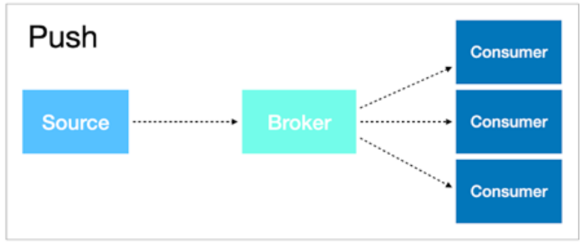 | 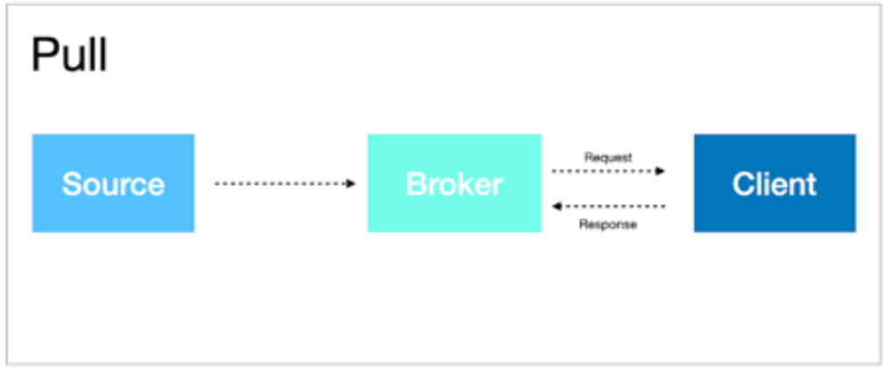 |
|---|---|
| Je zegt tegen de agent welke metrieken je allemaal wilt. Deze worden dan periodiek doorgestuurd. | Het monitoring systeem moet zelf de metrieken ophalen bij de bron. |
Volgens google moet je bij monitoring rekening houden met 4 golden signals. Deze betreffen:
Latency
Hoe lang het duurt om op een request te antwoorden.
Het is wel belangrijk om een vershil te maken tussen succesvolle en gefaalde request, om geen foute conclusies te trekken
Traffic
Hoeveel vraag is er naar de applicatie?
Errors
Het aantal requests die falen.
Saturatie
Hoe 'vol' is de service. (Memory, I/O)
Kan de service meer aan?
Het detecteren van problemen is moeilijker dan het lijkt. Je kan niet zomaar een threshold hardcoden voor het verbruik van een bepaalde resource, want dan ga je heel veel vals-positieven krijgen. Je zal dus gebruik moeten maken van de history van de metriek om conclusies te trekken. Dan is het bovendien ook moeilijk om te weten wanneer dat probleem echt een probleem is. Zo kan je bijvoorbeeld instellen dat je een error krijgt als je systeem voor een bepaalde tijd boven een bepaalde threshold zit.
Er moeten ook verschillende thresholds zijn voor een probleem en recovery. Als je bijvoorbeeld een error krijgt als je disk op 99% zit, is het probleem niet opgelost als de disk op 98% zit, want dan krijg je 5 minuten later weer een error.
Om een anomalie te detecteren moeten we een norm vastleggen op basis van vorige data, en nieuwe data met deze norm vergelijken. Je kan zelfs een stapje verder gaan. Door te voorspellen hoe een trend zich gedraagt, kan je problemen oplossen alvorens ze optreden.
Wanneer er zich een probleem voordoet, zijn er verschillende manieren om hierop te reageren. De software kan het automatisch oplossen, je kan ze zelf eens naar kijken of een ticket aanmaken. Elke stap kost extra tijd en verliest dus extra geld. We moeten dus streven naar automatische probleemoplossing. We kunnen bijvoorbeeld automatisch alerts sturen naar de mensen die het probleem kunnen oplossen. Hierin moet je ook een goede balans vinden. Als er te veel berichten worden gestuurd, kijkt niemand er meer naar. Te weinig is natuurlijk ook niet goed.
In een applicatie kan één error zorgen voor een hele cascade aan verschillende dingen die mislopen, waardoor alle belletjes in je monitoring beginnen te rinkelen. Het is hier de bedoeling dat je een module voorziet die de errors de-dupliceert. Dan kan je de root cause vinden en deze herstellen.
Microsoft Scom
Microsoft System Center Operations Manager (SCOM) is een closed-source monitoring solution van Microsoft. SCOM maakt het makkelijker om meerdere computers, apparaten, applicaties en services te monitoren en wordt typisch gebruikt op het IT-departement van bedrijven die gebruik maken van het Microsoft-ecosysteem.
OM kan het volgende:
Je vertellen welke gemonitorde objecten problemen vertonen
Alerts versturen
Informatie voorzien
Je kan als admin kiezen wat er gemonitored wordt
Infrastructuur
OM bestaat uit de volgende onderdelen:
Management server
Van hieruit beheer je alles
Heeft verschillende rollen:
Administreert de configuratie van de management group
Agents aansturen en ermee communiceren
Communiceren met databases in de management group
Operational database
Hier wordt de configuratiedata bewaard
Data warehouse database
Hier wordt alle monitoring en alerting data in opgeslagen
Management group
Groep van minimaal één management server, operationele database en data warehouse database
Optionele onderdelen
Reporting server
Deze maakt en presenteert rapporten vanuit de data in de data warehouse database
Webconsole
Gemakkelijke interface om data te bekijken
Gateway
Dan kunnen computers buiten het Ad domein ook monitoring data binnensturen.
Is eigenlijk een gepecialiseerd type van een management server
Agents
Op elke computer moet een agent geïnstalleerd worden. Dit is een programma dat data verzamelt, bekijkt, alerts genereert en doorstuurt. De agents halen hun configuratie van een management server in hun management group, waaraan ze ook hun rapportering doen.
Je kan ook gebruik maken van een proxy agent, deze kan data van een andere computer doorsturen naar de management server en is nuttig voor apparaten waar je de monitoring software niet op geïnstalleerd krijgt.
Management pack
Een management pack is een pakket dat automatisch alle nodige software kan installeren om de dingen te monitoren die gemonitored moeten worden. Hierin zitten dan ook een aantal rules die zeggen wat er precies moet bijgehouden worden en wat er gedaan moet worden als er bepaalde dingen gebeuren. Die rules kunnen er zelfs voor zorgen dat er een script gedraaid wordt.
Objecten worden volgends de volgende stappen ontdekt en gemonitored:
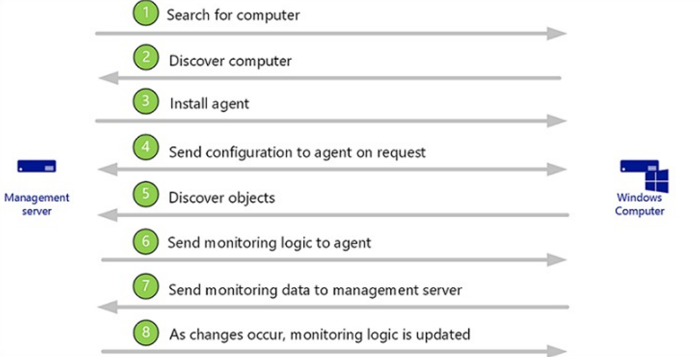
Deployments
Je kan OM op verschillende manieren deployen
Single-server
Wordt gebruikt voor evaluatiedeployment en testing
Alle management group roles zitten samen op één server
Dus alle gemonitorde apparaten moeten op dezelfde AD forest zitten als de management group
Slecht robuustheid en performantie
Distributed deployment
Bijvorbeeld meerdere management servers in een resource pool
Schaalbaarheid
Audit collection
99% van de OM deployments werken zo
Je kan tegenwoordig ook dingen in de de public cloud monitoren met je eigen monitoring systeem
Je kan de OM zelfs hosten in de cloud
Het probleem is dat Microsoft eigenlijk SCOM al aan het killen is. Ze gebruiken het zelf al niet meer. Nu gebruiken ze Azure Monitor.
Zabbix
Zabbix is een enterprise open-source monitoring solution voor netwerken applicaties. De code is open-source, maar je moet wel geld betalen aan Zabbix voor garanties en installatie enzo. Een aantal features:
Goeie performance en capaciteit
Autodiscovery
Low level discovery
Agentless monitoring
Flexibele email notificaties om voorgemaakte events
Veilige gebruikersauthenticatie
Architectuur
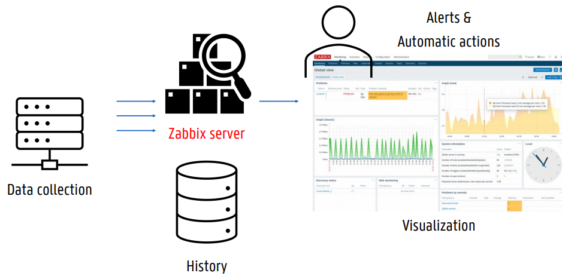
Je stuurt al je data door naar een zabbix server (waar je voor moet betalen). Zabbix doet dan een heleboel processing enzo en geeft jou mooie visualisaties en alerts enzo.
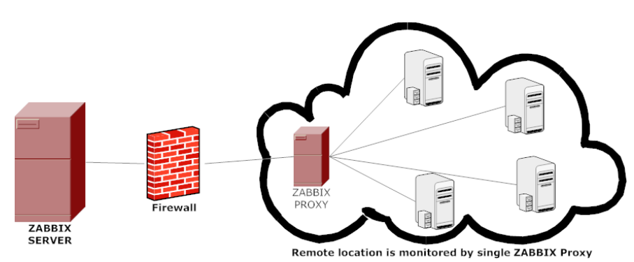
Om jouw remote locatie te kunnen monitoren moet je zelf een zabbix proxy hosten om door de firewall te raken en de data naar de zabbix server te sturen.
Data collection
Zabbix kan data verzamelen op alle lagen (Hardware, OS, Netwerk, ... , Applicatie). Dit kan zoals we al gezien hebben bij andere tools op twee manieren:
Pull
Service check of script uitvoeren
Passieve agent: werkt pasfp het moment dat hij een request krijgt
Push
Apparaat gaat uit zichzelf logs enzo sturen
Actieve agent: periodiek gevraagde data forwarden
Tick stack
De TICK stack is een open-souce monitoring oplossing, TICK staat voor:
Telegraf
Data verzamelen
Werkt met plugins en kan werken met externe scripts
Minimaal memory verbruik
InfluxDB
Schaalbare time-series database voor metrieken, events, real-time analytics
SQL-achtige querytaal
Ondersteuning voor 'continuous queries'
In InfluxDB v2 zitten Chronograph en Kapacitor erbij
Chronograf
Data visualisatie, database management
Overzicht van de infrastructuur
Alert management
Kapacitor
Processing van zowel streaming als batch data
Kan alle transformaties uitvoeren die InfluxQL kan doen
Je kan makkelijk pipelines maken
Dat ziet er dan ongeveer zo uit:
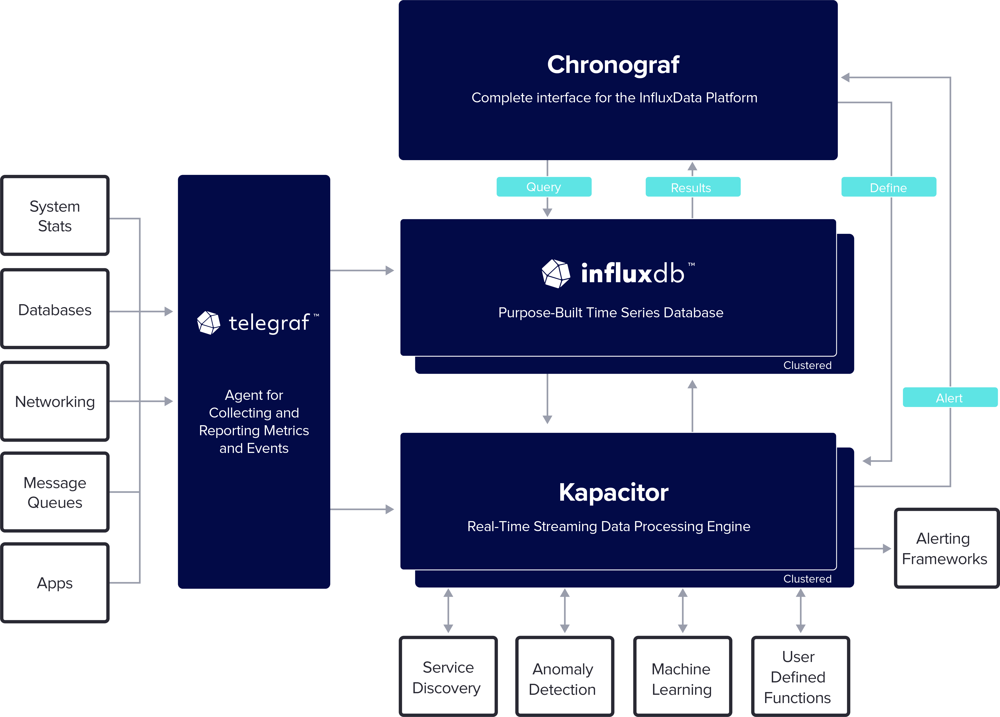
De belangrijkste link hier is de alerting frameworks.
Elastic Stack
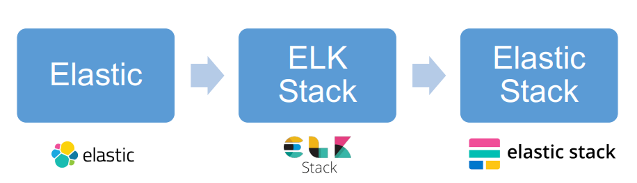
Elastic was eigenlijk een search bedrijf, maar iets uigebreider dan hoe bijvoorbeeld google ofzo werkt. Dit dan natuurlijk op monitoring data. Zoals je in het figuurtje hierboven ziet is de Elastic stack in drie stappen ontwikkeld. Eerst had je alleen elastic search, dan de ELK stack.
ELK staat voor:
Elasticsearch
Open-source RESTful search engine voor analyses
Json based
Logstash
Data processing pipeline
Kan data transformeren enzo
Pusht de data naar elasticsearch, maar je kan ook naar andere dingen pushen
Kibana
Visualisatie en UI
Dashboards
Een probleem met de ELK stack was dat data shippers (dingen die data doorsturen) vaak erg zwaar waren en veel onnodige functionaliteit bevatten. Dit werd opgelost met de introductie van beats. Dit zijn kleine, specifieke plugins die de nodige data gaan doorsturen. Een aantal voorbeelden van beats zijn: Filebeats, metricbeats, packetbeats, ... Met de introductie van beats komen we in de laatste fase. De elastic stack.
| 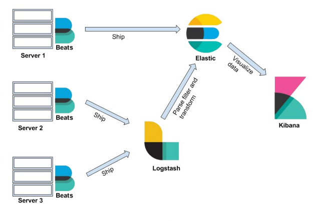 | 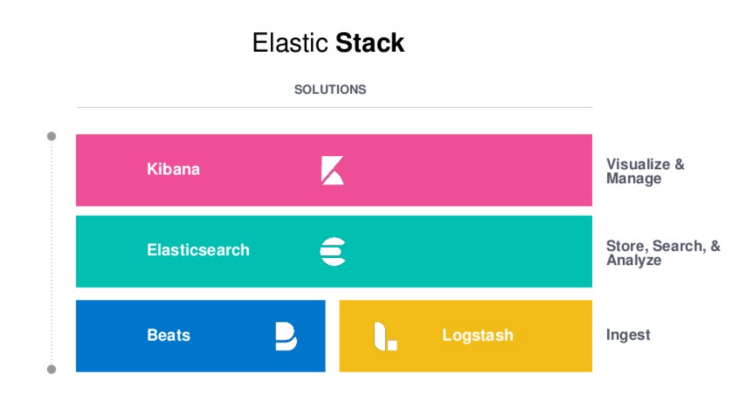 |
|---|
Prometheus
Prometheus is een metrics-based monitoring en alerting stack die gemaakt is voor dynamische cloud-omgevingen. Prometheus is niet gemaakt voor logging of tracing, automatische anomalie detectie of schaalbare opslag. Prometheus is eigenlijk enkel de time-series database.
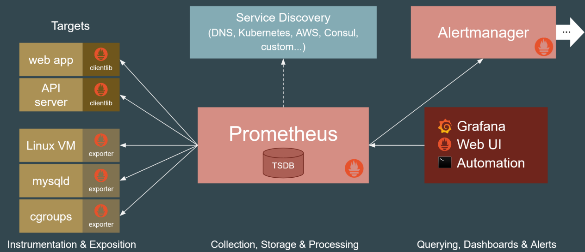
Je kan queries schrijven met promQL, dit is een nieuwe querytaal die niet lijkt op SQL. Je kan er wel makkelijk berekeningen mee doen. Prometheus bewaart data local, zonder clustering, dus op één plek. Voor de meeste oplossingen is dit genoeg. Voor lange termijn opslag schrijf je de data van Prometheus weg naar een decoupled remote storage.
Als je echt wilt, kan je Prometheus nog schaalbaarder maken met Thanos.
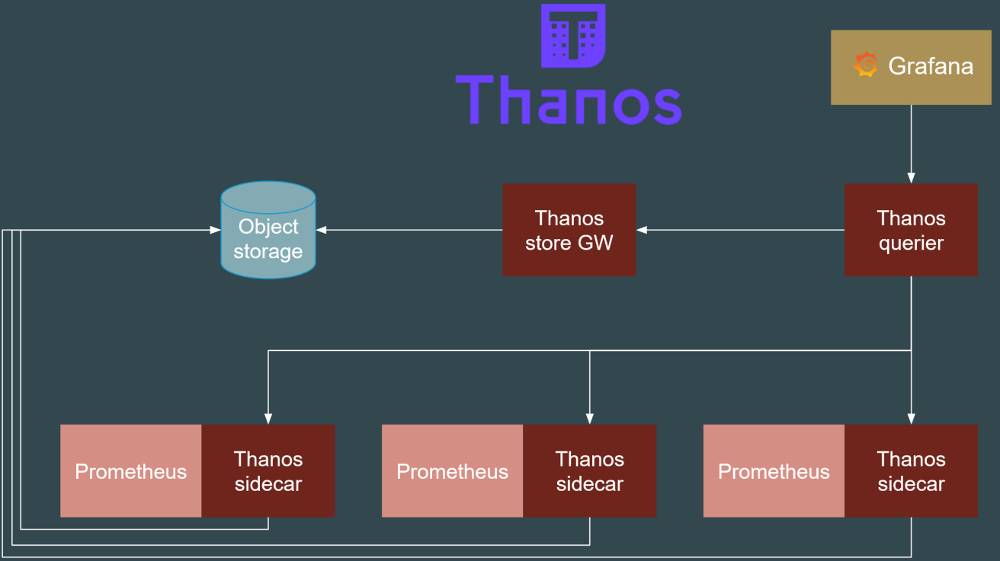
Service discovery
Het voordeel aan Prometheus is service discovery, dit betekent dat het zelf services kan vinden om te monitoren. Meer kan ik hier eigenlijk niet over vertellen.
Standardized APIs and formats for monitoring
Als we willen switchen van zebbix naar elastic stack, zijn we gekloot. De oplossing voor dit probleem is om niet meer te monitoren. In de plaast daarvan gaan we observeren. Dit is eigenlijk een subset van monitoring, en wijst op het observeren en verzamelen van drie types data om de performantie en gezondheid van een systeem te garanderen:
Metrieken: quantificeerbare stukken data
Wat is mijn load, CPU, geheugen, ...
Traces: wat is er gebeurd en in welke volgorde
Wat is het verloop van mijn request?
Logs/events: specifieke gebeurtenissen
Wat is een error? Wat is geen error?
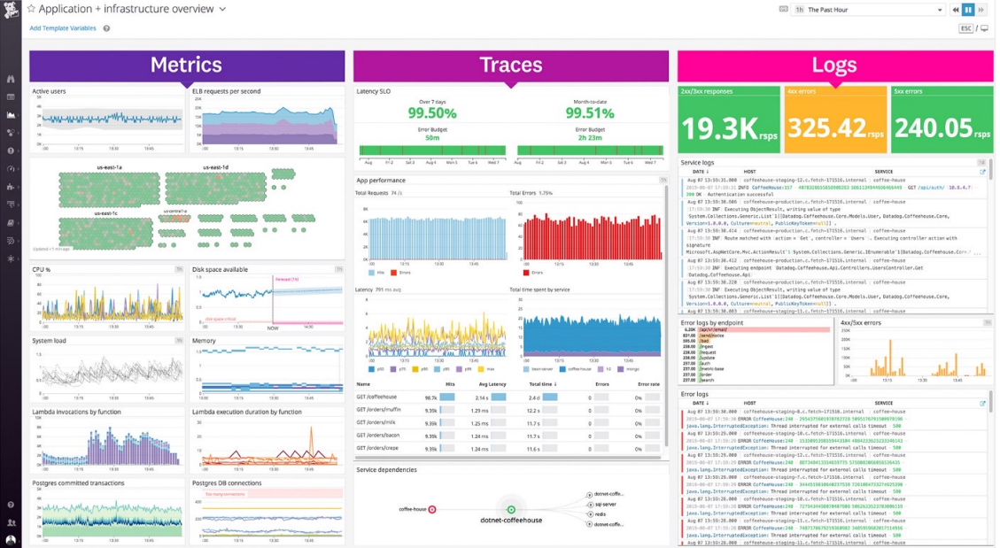
Als we een gestandaardiseerde API hebben voor het verzamelen van deze drie types, kunnen we altijd zien hoe ons systeem zich momenteel gedraagt en toekomstige problemen voorkomen. Er zijn een aantal open-source projecten die dit zo proberen te doen:
Opentracing
Weet wat er uitgevoerd is en welke weg het heeft afgelegd
Een gestandardiseerde API voor tracing, voorziet een specificatie voor ontwikkelaars om hun eigen services te voorzien van distributed tracing.
Momenteel gearchiveerd
Opencensus
Kwam van google
Een verzameling van libraries om metrieken te verzamelen en data te exporteren
Kan je naar verschillende back-ends sturen
Ook gearchiveerd
Opentelemetry
Opentracing + opencensus
Openmetrics
Beïnvloedt door Prometheus
Een formaat dat zegt hoe metrieken eruit moeten zien (standardisatie)
ding.onderdeel.metriekKan je samen met opentelemetry gebruiken
Welke moet ik kiezen
Microsoft SCOM
Als je een Microsoft omgeving hebt
ELK Stack
Vooral voor logs
TICK, Prometheus, Zabbix
Prometheus bijvoorbeeld voor dingen met containers
Zabbix is makkelijker en kan grotere topologieën aan
//TODO misschien wat uitbreiden want nu is het een kopie van de slide
--- 7 - Storage Virtualization ---
Intro
Met storage virtualization verbergen we de onderliggende complexiteit van fysieke opslagmediums, waardoor we een logisch overzicht van deze mediums kunnen voorzien voor computersystemen. In het algemeen verbergen, abstrageren of isoleren we de interne functies van de opslag. Dit biedt de mogelijkheid tot netwerk- en applicatieonafhankelijk beheer van opslag of data.
Storage virtualization heeft een aantal voordelen:
Vergemakkelijkt beheer
Ontwikkelaars moeten zich niet bezig houden met opslag
Moeten niet weten waar de data is opgeslagen
Vermijdt underutilization
En verbeterde performance
Minder investering in hardware
Hogere flexibiliteit
Laat pay-per-use toe
Opslag toevoegen of verwijderen wanneer nodig
Schaalbaarheid & fault tolerance
Snel en remote data access, backup, mirroring, replication
We kunnen storage van meerdere vendors combineren
Types
File-level virtualization
Alles in de virtuele storage wordt aangeboden als een filesystem
Dus in de vorm van hiërarchisch gestructureerde bestanden en mappen
We kunnen verschillende fysieke bronnen hebben, maar ze worden als één virtueel filesystem getoond
Beheer van dit filesystem wordt gedaan door een virtualization entity
Voordelen
Gekende hiërarchische structuur
Makkelijke navigatie
Bestaande applicaties gebruiken dit typisch al, dus de applicatie moet niet gewijzigd worden
Nadelen
Deze systemen moeten schalen door extra filesystems toe te voegen, en niet door meer capaciteit toe te voegen
Dus iets minder schaalbaar
Voorbeelden
Amazon elastic filesystem
Google cloud filestore
Block-level virtualization
We mappen virtuele blokken naar de fysieke blokken van opslagapparaten
De OS of applicatie moet hier zelf een filesysteem op maken
De opslagcapaciteit wordt aangeboden in de vorm van virtual disks
Typisch voor high-performance applicaties
Voordelen
Niet langer één pad naar de data
Rechtstreeks toegang tot verschillende blokken, sneller ophalen
Gemakkelijke partitionering van blokken
Goed schaalbaar voor grote databanken
Nadelen
Relatief duur
Kan niet om met metadata (verantwoodelijkheid van de applicatie)
Voorbeelden
AWS elastic block storage
Google persistent disks
Object-level virtualization
Voor applicaties die werken met verschillende soorten ongestructureerde data
Als structuur niet belangrijk is
De data is opgesplitst in discrete eenheiden, elk met eigen metadata en unieke id
Worden op geslagen in één platte repository
Worden beschikbaar gemaakt door een API via HTTP requests
Voordelen
Heel goed schaalbaar
Perfect voor ongestructureerde data, zoals foto's en video's op sociale media
Goed voor statische data
Snel ophalen door middel van object storage metadata
Nadelen
Objecten kunnen achteraf niet aangepast worden (moeten herschreven worden), dus minder performant
Moeilijke match met traditionele databanken
Extra complexiteit in ontwikkeling door object storage API
Voorbeelden
WeTransfer
Messenger, facebook, instagram
Amazon S3
Google Cloud storage
Hier is een kadertje van de slides (ik had even plezier met de emojis):
| Block | File | Object | |
|---|---|---|---|
| Interface | Operating system | User | Program (API) |
| Cost | 💲💲 tot 💲💲💲 | 💲💲 tot 💲💲💲💲 | 💲 |
| Performance | ✈️ | 🚌 | 🚲 |
| Proximity | Dedicated network / fibre channel / 10Gb | LAN / 10Gb | Internet |
| Use case | OS, Database | Sharing user data, web content | Images, PDFs, video |
| Scalable | 💽💽 | 💽💽💽💽 | 💽💽💽💽💽💽💽💽 |
Methodes
Er zijn verschillende methodes waarop storage virtualization kan worden aangeboden:
Host-based virtualization
Een virtualization host biedt storage aan een guest OS
Virtuele machines nemen niet de hele schijf over, maar krijgen een virtual drive. Dit is gewoon een bestand
Kan dynamisch groter en kleiner gemaakt worden
Beperkte schaalbaarheid
Beperkt tot de ene host waar die file op staat
Overhead door maintenance en software
Het draait op een OS van een host
Zeker niet de beste oplossing
Array-based virtualization
Onderscheid maken tussen vershillende tiers opslag
Bijvoorbeeld high-speed en standard tier (SSD, HDD)
Een logische eenheid kan bestaan uit uit disks van zowel high-speed en standard tiers
Dan is de high-speed meestal een read-write cache, of wordt data altijd eerst op de high-speed geplaatst
Achterliggend kan er dan synchronizatie gedaan worden
Hoe dit gedaan wordt is de verantwoordelijkheid van de virtualization entity
In het algemeen verhoogde performance
Wordt nog veel gebruikt, maar is niet de belangrijkste oplossing
Network- or fabric-based virtualization
We kunnen aan een computer eender welke storage van eender welke vendor hangen
DAS, NAS en SAN
Network storage
Er zijn drie soorten network storage:
Direct-attached storage (DAS)
Clients kunnen verbinden met één of meerdere servers waarop verschillende soorten data wordt opgeslagen
Was ontwikkeld om opslagcapaciteit te schalen wanneer datavolumes groter werden door disk arrays aan een server te zetten
De server waaruit toegang wordt verleend tot de verschillende opslagapparaten is een single-point of failure
Veel bandbreedte wordt gebuikt voor toegang, opslag en backups van data
Network-attached storage (NAS)
Ontstaan uit DAS
Eén of meer dedicated fileservers worden beschikbaar gemaakt in een LAN
Het netwerk is nog steeds een bottleneck, zeker voor backups
Storage-area network (SAN)
Een apart netwerk met storage devices (storage area)
Zijn vebonden met een speciale san switch
Bieden een pool van opslagruimte
Elke computer kan aan de opslag van de SAN alsof ze lokale schijven zijn
Gebruikt intern fibre channel protocol
Onderdelen van SAN
Node: eender welk apparaat verbonden aan de SAN (typisch servers)
Fabric: alle hardware die servers met opslagapparaten verbindt via fibre channel switching
Fibre channel: hoge-snelheid netwerktechnologie speciaal voor storage area
World-wide name (WWN): unieke id voor elk opslagapparaat
Alle data transfer zoals backups gebeurt achter de servers en is transparant
Het is daardoor wel een stuk duurder dan NAS
Voordelen
Tegelijke toegang door meerdere hosts
Storage consolidation
Verlaagde cost of ownership en management complexiteit
Verhoogde availability, schaalbaarheid en databescherming
Beter gebruik van capaciteit
Hyperconvergence
Het idee rond hyperconvergence is om een framework te maken dat opslag, computing en networking combineert. Alle IT shit wordt dan gezien als één groot geheel. Zo wordt het tegenwoordig ook aangeboden door veel providers. Hyperconvergence maakt gebruik van een hypervisor voor gevirtualiseerde computing, software-defined storage en gevirtualiseerd networking. Alle kritieke (data center) functies draaien dan op een geïntegreerde softwarelaag, in plaats van op specifieke hardware.
De virtualisatiesoftware maakt dus abstractie van de onderliggende resources en alloceert ze dynamisch voor applicaties die in VMs of containers draaien. Deze aanpak heeft een aantal voordelen:
Verlaagde data-center complexiteit en verhoogde schaalbaarheid
Betere resource efficiëntie
Time en cost savings
Vermijdt licensed software (zoals disaster recovery tools) hier ben ik het niet helemaal mee eens want VMware is ook duur, maar oké
Technologieën
Vmware vSAN
VMware vSAN voorziet een gedistribueerde, gedeelde datastore. Dit kan door DAS storage devices te aggregeren tot een storage repository, waar ze virtueel gekoppeld zijn in een vSphere cluster. Hierdoor is er geen single point-of-failure door:
datareplicatie
erasure codes*
snapshots
storage cloning
| 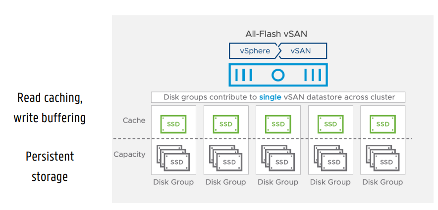 | 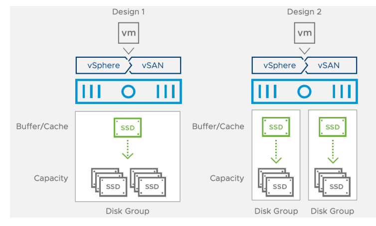 |
|---|
vSAN werkt dus ook met verschillende tiers (die van daarstraks) voor hogere performantie. In het tweede plaatje zie je twee opties om dit te doen. Optie 1 is goedkoper, maar heeft lagere reliability. Optie 2 is duurder, maar als één SSD neergaat ben je niet plots toegang tot alles kwijt.
Verder kan je vSAN ook combineren met Kubernetes. Je kan vSAN dan gebruiken voor persistentVolumes, waardoor je dan een virtueel volume kan aanbieden dat beschikbaar is voor je pods.
Erasure codes
Erasure codes zorgen ervoor dat je je data kan verpreiden over meerdere servers, maar toch de volledige data kan terugkrijgen als er eentje kapot gaat. Beschouw het volgende voorbeeld.
We slaan de getallen
Nu kan je met de formule altijd de data van één dode server herberekenen wanneer hij sterft, zonder dat er een volledige backup genomen moet worden. Eigenlijk is dit voorbeeld iets te ingewikkeld voor geen reden. Je kan ook een optelling of een XOR gebruiken.
CEPH
CEPH is een open-source gedistribueerde storage oplossing en biedt zowel object-, block- als file-based storage aan, maar het wordt vooral ingezet voor de eerste twee. Door zijn gedistribueerde aard voorziet het opslag zonder single point-of-failure.
Er worden vijf soorten daemons gebruikt om dit mogelijk te maken:
Cluster monitors (mon)
Houdt de staat van de verschillende apparaten in de cluster in de gaten
Houdt bij welke actief of dood zijn
Object storage devices (osd)
Slaan de effectieve data op
Metadata server (mds)
Houden bij wat waar opgeslagen is
Metadata voor object-based storage
HTTP gateways (rgw)
Geven toegang aan opslaglaag via een API
Typisch compatibel met Amazon S3 en OpenStack Swift (voor hybride storage)
Managers (mgr)
Onderhoudstaken (backups, ...)
Voorziet een interface voor monitoring
Rook
Rook voorziet een interface tussen CEPH en Kubernetes, en zorgt er dus voor dat ons gedistribueerd datasysteem kan samenwerken met de verschillende pods. Hierdoor kan onze gedistribueerde storage zichzelf schalen, beheren en healen. Alle taken van een systeemadministrator worden dus basically overgenomen. Het komt erop neer dat Rook een storage operator is voor Kubernetes. Rook zal ervoor zorgen dat je CEPH kan draaien met je Kubernetes cluster. Alle configuratie van de storage gebeurt dus automatisch onderliggend.
Als je storage nodig hebt in Kubernetes zal Rook vanzelf agents en operators opzetten:
Operator
Zorgt ervoor dat de verschillende storage clusters onderhouden worden
Doet dus ook monitoring
Agent
Draait op elke storage host
Houdt zich bezig met alle storage operaties (network storage vastmaken, volumes mounten, ...)
MinIO
Minio is ook weer zo een storage ding en bestaat uit een aantal delen:
MinIO Server
Gedistribueerde object storage, kan met Amazon S3 API
Voorziet encryptie, erasure coding, replicatie, ...
MinIO Client
Hij slaat dit over in de les
Command-line interface die je kan gebruiken om met minIO servers te interageren en ze te beheren
MinIO SDKs
APIs om aan eender welke S3-compatibele object storage te kunnen
Danzij MinIO kan je met één API aan Amazon S3, Azure Blob en je private cloud. Je kan het zelfs samen met vSAN en Kubernetes gebruiken.
Red Hat Gluster
Ook volledig open source
Je kan weer Amazon S3 aanspreken voor object storage
Inherent volledig container-based
Vermijdt single point-of-failure
Je kan verschillende protocollen gebruiken om je data en storage spaces te beheren. Verschillende fysiek bronnen worden als één geheel aangeboden. Hier wordt ook weer hyperconvergence gedaan. Servers, disks, ... worden door de virtualization entity aangeboden aan de applicatie.
--- 8 - Gastlessen ---
Transcriptie van het einde van de tweede gastles:
Van de eerste gastles moet je niets kennen voor het examen. Voor deze gastles moet je ook niets kennen voor het examen.
Bruno
--- Examenvragen ---
Ik heb net een ontdekking gemaakt. Ik weet niet hoe dit mij is ontsnapt, maar blijkbaar zet Bruno een icoontje op elke slide waarvan hij vindt dat je hem moet kennen. Het icoontje in kwestie:

Godverdomme hij doet dit alleen in het tweede hoofdstuk. Geen wonder dat ik mijn eigen geestelijke gezondheid in vraag begon te stellen.
Vragen van de les
Ik heb voor jullie alle lessen bekenen en een lijst gemaakt van alle momenten dat bruno heeft gezegd dat je iets moest kennen voor het examen. Ik heb voor de delen die gegeven zijn door Merlijn en Jericho wel vragen verzonnen op basis van hun uitleg. Alle vragen waar je een figuur moet kennen zijn aangeduid met [figuur].
Cloud
1. Wat wordt bedoeld met Cloud. Leg uit. (Cloud slide 3)
Een cloud is een grote pool van gemakkelijk bruikbare en toegankelijke gevirtualiseerde resources zoals hardware, develoment platformen en/of services. Die resources kunnen dynamisch geherconfigureerd worden om een variabele load aan te kunnen (scale), zodat resources zo optimaal mogelijk worden gebruikt. Deze pool van resources wordt typisch aangeboden in een pay-per-use model aangeboden, waarbij garanties worden aangeboden door de provider in de vorm van een op maat gemaakte SLA (service level agreement).
Alle verschillende definities van cloud hebben deze dingen gemeen:
Pay-per-use (geen commitment)
Elastisch (op en neer schalen on demand)
Self-service interface
Webinterface met account en creditcard
Resources zijn abstract/gevirtualiseerd
Je kan typisch nooit voor een specifieke fysieke machine vragen
2. Geef de voordelen van virtualisatie. (Cloud slides 56-59)
VM Isolatie
Secure multiplexing
Op een veilige manier meerdere gebruikers/applicaties op dezelfde hardware zetten zonder dat ze kunnen interfereren
Moderne processoren hebben betere ondersteuning voor virtualisatie, bv. direct memory access
Sterke garanties
Bug, crashes, virussen in één VM raken niet bij andere VMs (behalve als er bugs in de VM software zitten)
Performatie isolatie
Resources van het systeem partitioneren. Je kan bijvoorbeeld niet over de limiet gaan van de VM, ook al heeft de fysieke machine meer geheugen
Mixed OS environment
Je kan meerdere besturingssystemen op één machine draaien
VM encapsulatie
We kunnen een VM in een bestand stoppen en bijvoorbeeld doorsturen, met de volledige toestand van het geheugen, applicaties en data.
Dan kunnen we de VM gemakkelijk ergens anders opstarten
VM Compatibiliteit
Oude legacy applicaties kunnen uitgevoerd worden op VMs
Hardwareonafhankelijk
Create once, run everywhere
3. Hoe is virtualisatie geëvolueerd doorheen de jaren? Leg de verschillende stappen uit en bespreek de veranderingen. Teken de figuurtjes. (Cloud slide 61)[figuur]
Eerste generatie
-
Full virtualization, de software bootst een volledige fysieke hardware na
Volledig software-based, je hoeft niets te wijzigen in het guest operating system
De hardware had geen notie van virtualisatie
Het abstracte model van de virtuele machines werd vertaald naar de hardware (binary rewriting)
Grootste nadeel is performantie (25-75% tragere memory access, ...)
Tweede generatie
-
Paravirtualization
In de VM (guest operating system) een aantal aanpassingen zodat we toch rechtstreeks naar de hardware kunnen.
Het nadeel is dat de guest OS aangepast moest worden afhankelijk van de gebruikte hypervisor (spreekt het nut van VMs rechtstreeks tegen)
Bijvoorbeeld als je VMwareTools installeert zodat je VM minder delay heeft voor de muisinput
Het voordeel is dat het sneller is dan de vorige generatie
Derde generatie
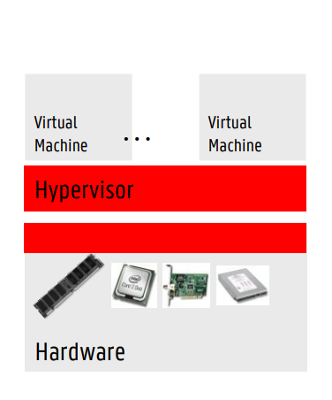
Hardware-assisted virtualization: hardware weet dat virtualisatie bestaat
Guest OS moet niet aangepast worden
Je hebt wel twee dingen nodig
Een hypervisor die hardware acceleratie ondersteunt
Processoren die hardware acceleratie ondersteunen
Hypervisor heeft rechtstreekse access tot RAM, netwerk, storage, ...
Het voordeel is dat je een ongewijzigde OS kan draaien zonder problemen aan hoge performantie, maar je moet wel software hebben die dat ondersteunt.
Het nadeel is de startup time van de VM, want deze moet helemaal opstarten zoals een gewone PC. Dit probleem heb je eigenlijk met alle VMs.
Bij een container heb je dit probleem niet want deze heeft al deze rommel niet volgens Bruno
Bij een site zoals Zalando is deze vertraging geen probleem, maar bij Ticketmaster, waar het plots kan dat er duizenden mensen tegelijk refreshen is dit wel erg.
4. Wat is de vierde vorm van virtualisatie? (Cloud slide 68)
OS-level virtualisatie wordt op het niveau van het besturingssysteem gedaan. Dit wordt vaak gebruikt voor containers. Het voornaamste voordeel hiervan is densiteit, want containers hebben niet alle extra bagage die bij een VM zit (zoals een OS en bios). Ze nemen dus veel minder plaats in.
Je kan als je containers gebruikt met dezelfde hardware drie keer meer servers opstarten als wanneer je VMs gebruikt. Dit werd vooral gebruikt in de hosting markt.
5. Leg het verschil uit tussen VM-based virtualisatie en OS-level virtualisatie. Maak een tekening. Vergelijk ten slotte een hypervisor met een container (Cloud slide 69)[figuur]
| |
|---|---|
| - Virtuele machines zijn volledig geïsoleerd - Elke VM heeft zijn eigen OS - De hypervisor regelt toegang tot de gedeelde hardware | - De kernel van de host heeft meerdere process spaces - Containers zijn lightweight, ze delen de kernel van de host OS - Elke container heeft wel zijn eigen root file system |
| Hypervisor | Container |
|---|---|
| One real hardware, many virtual hardwares, many OSs | One real hardware, no virtual hardware, one kernel, many user space application instances. Hardware acceleratie is dus moeilijker |
| High versatility, can run different OSs | Hier kan je bijvoorbeeld geen DOS appllicatie mee draaien |
| Lower density | Higher density |
| Virtualization/emulation overhead (derde generatie wel wat minder) | Near-native performance, almost no overhead |
| Hardware-enforced isolation | Software-enforced isolation (minder veilig) |
| Size: potentially large (OS in VM) | Size: potentially small |
| Boot time: relatively high | Boot time: fast |
Bij moderne technologie is de lijn tussen VM-virtualisatie en containervirtualisatie wat vager. Er zijn ook VMs met minimal OS layers, of containers die een minimal OS layer hebben. Er zijn ook containers met hardware-enforced isolation (microVM).
6. Geef de open IAAS oplossingen en beschrijf ze. (Cloud slide 76)
Openstack
Meest gebruikte
Zeer uitgebreid en ingewikkeld
Apache Cloudstack
Tweede meest gebruikt
Minder uitgebreid, maar makkelijker
API compatibel met AWS voor hybrid cloud
Opennebula
Minder uitgebreid, maar makkelijker
Gebruikt door sommige grote bedrijven
Niet echt aangeraden, minder populaire oplossing
Eucalyptus
Geflopt
Focus op AWS compatiebele private cloud
7. Welke standaarden zijn er voor virtualisatie? Geef volledige namen. Zijn er ook gelijksoortige standaarden voor containers? (Cloud slide 86) [figuur]
Open virtualization format (OVF)
Beschrijft een manier om een virtuele machine in een bestand te steken
Bevat OVF descriptor: XML die de ingepakte VM beschrijft (naam, requirements, ...)
Disk images
Certificaten en licenties
Dan kan je je VM gewoon naar ergens anders verplaatsen
Open cloud computing interface (OCCI)
- (figuur kennen)
Vermijdt het gebruik van proprietaire IAAS APIs, dan zijn de commando's om VMs te starten en te stoppen overal hetzelfde
Werkt met een RESTful protocol voor alle commando's
Ondersteund door een aantal providers (en open source oplossingen), maar van de grote spelers alleen AWS
Niet meer gebruikt
Cloud infrastructure management interface (CIMI)
Net hetzelfde als OCCI
Er is alleen een implementatie voor Openstack, dus het heeft niet zo veel nut.
Niet meer gebruikt
Cloud data management interface (CDMI)
Voornamelijk bedoeld om storage to koppelen aan draaiende VMs
RESTful standaard voor storage, gebruikers exporteren, data tussen cloud systemen verplaatsen, ...
Niet meer gebruikt
Zowel OCCI en CIMI zijn weinig gebruikt, de standaard is nu Amazon EC2 (elastic cloud). Het is eigenlijk geen standaard want het is van Amazon, maar iedereen gebruikt het. EC2 heeft een REST API en een hele boel SDKs voor verschillende programmeertalen.
Azure en Google Cloud voorzien gelijkaardige applicaties.
Er zijn ook gelijkaardige standaarden voor containers:
Open containers initiative (OCI)
OCI heeft hetzelfde doel als de standaarden die we hierboven hebben besproken, maar dan op containers. Er zijn twee manieren waarop dit wordt gedaan:
Runtime specification (runtime-spec)
Een API die standaardiseert hoe we de containers starten, stoppen, pauzeren, ...
Image specification (image-spec)
Zoals OVF, maar dan voor containers
Vertelt hoe je een container in een file steekt
Container networking interface (CNI)
CNI voorziet een interface tussen de container runtime in de netwerkimplementatie.
Voorziet ook third-party plugins voor moeilijkere oplossingen.
Het is een standaard die beschrijft hoe containers een IP-adres krijgen, hoe ze bereikbaar zijn, hoe ze aan routering doen, ...
Wordt onder andere door Kubernetes gebruikt.
8. Vergelijk kubernetes met openshift.
| Parameter | Kubernetes | Openshift |
|---|---|---|
| Origin | Open-source project/framework, geen product | Product met veel variaties. OpenShift Origin is open source, maar dit is eigenlijk niet de beste versie. |
| Installation | Kan op bijna elke linux distro geïnstalleerd worden | Gelimiteerd, voornamelijk Red Hat enterprise linux (RHEL) |
| Key Cloud Platforms | GKE op Google cloud, EKS op amazon AWS en AKS op Microsoft azure. | Red hat ondersteunt AWS en Azure |
| Security & Authentication | Well defined, maar niet zo strict als openshift. Je moet nog veel zelf doen om het veilig te krijgen. | Strictere security policies en authenticatiemodellen |
| Use of templates | Kubernetes Helm templates zijn flexibel en makkelijk te gebruiken | Openshift templates zijn minder gebruiksvriendelijk en flexibel |
| Releases | 4/jaar | 3/jaar |
| CI/CD | Mogelijk met Jenkins maar niet geïntegreerd in kubernetes | Geïntegreerd met Jenkins |
| Learning curve | Geen gemakkijke web UI | Gebruiksvriendelijke web console |
| Initial rollout | Moeilijk als nieuwe onderdelen moeten geïnstalleerd worden (bv. dashboard) | All-in-one oplossing |
Openshift is basically Openshit.
9. Wat is Cloud Foundry? Wat zijn Diego Cells? Vergelijk Cloud Foundry met OpenShift.
Bij cloud foundry draaide je applicatie in Diego cells. Dit was gelijkaardig aan een container en bestond voordat Kubernetes bestond. Later zijn de Diego cells vervangen door een soort Kubernetes (KubeCF).
| Parameter | Cloud Foundry | OpenShift |
|---|---|---|
| Container orchestratie | Eerst Diego, nu kubernetes | Had van in het begin kubernetes |
| Infrastructuur | Draait liefst op VMware Origin, maar kan ook op bare metal | Kan draaien op RHEL of bare metal |
| Minimal deveoper version | CF Dev | Minishift of Code-ready containers |
| Service registry and discovery | Consul en Eureka | Eigen tooling en multicast |
| Zero downtime deployments | Blue-green deployments: twee identieke versies draaien in productie. Updates overschrijven de productie versie die offline is, waarna de load naar deze machine wordt gestuurd | Gebruikt kubernetes zero downtime deployments |
| Build mechanism | Buildpacks: je geeft je source code en er wordt vanzelf een container van gemaakt en gedeployed. Je bent afhankelijk van welke buildpacks er beschikbaar zijn. | Source to image conversion van source code van git repo naar docker images, waardoor ontwikkelaars zich niet moeten bezighouden met dockerfiles enzo. |
10. Wat is serverless computing? Wat zijn de voor- en nadelen?
Een andere naam voor FAAS (Function-as-a-service)
Voordelen
Geen beheer van servers
Betaal alleen voor wat je gebruikt
Dynamische toewijzing van resources
Kleine codefragmenten
Nadelen
Vendor lock-in
Weinig debug en monitoring tools
Moeilijk om te beslissen wat serverless moet zijn
Bonus: Welke standaarden bestaan er voor PAAS?
Cloud application management for platforms (CAMP)
Ontwikkeld door Oasis
Een taal die de applicatieartefacten en de services die nodig zijn om ze uit te voeren en verbinden beschrijft
Beetje hetzelfde als OCCI voor IAAS
Voorziet een unificatie van management intefaces van PAAS providers d.m.v. REST calls
In theorie zou je dan een applicatie op verschillende PAAS platformen kunnen draaien
Er is een POC op openstack, maar niemand gebruikt het eigenlijk
Topology and orchestration spec for cloud apps (TOSCA)
Zeer uitgebreide standaard
Een blueprint maken
Orchestratie van cloud services
Hun relaties
Hoe ze beheerd worden
Probleem: de standaard zegt niet "hoe". De cloud vendor kan dit zelf beslissen.
Implementaties
Tosca-parser voor OpenStack
OpenTosca
Cloudify
Initeel geen industriële uptake
Maar plots heeft Red Hat de Tosca v2 diss track gedropt
Is nog in ontwikkeling
Windows server
11. Leg het principe van shielded VMs uit aan de hand van een figuur. (Windows server slide 15)[figuur]
Een shielded VM zorgt ervoor dat je VM wordt uitgevoerd in een veilige omgeving, die je verzekert dat er niemand meekijkt met wat je doet. Het opstarten van een shielded VM verloopt in 8 stappen:
De gebruiker vraagt een shielded VM aan.
De host stuurt informatie over zichzelf naar de Host Guardian Service (HGS) met de vraag om toestemming om de VM te starten.
De Attestation Service van de HGS kijkt na of de info geldig is en of de host gekend is.
Als dit oké is krijgt de host een certificaat van de HGS.
Nu vraagt de host voor een key om de VM te kunnen unlocken, want zonder hem te unlocken kan hij niet opgestart worden. De host stuurt dus deze vraag samen met zijn certificaat naar de HGS.
De Key Protection Service van de HGS beslist dan of hij de host voorziet van een sleutel.
De HGS stuurt de sleutel naar de host.
De host kan nu de VM unlocken en hem starten.
Het is nu onmogelijk om de data en de state van de trusted VM te inspecteren. Dit komt doordat een stuk van de processor, genaamd de Trusted Platform Module (TPM) zorgt voor encryptie. De data kan dan enkel gedecrypteerd worden met de sleutels van de HGS. Zo kan hetgene dat uitgevoerd wordt in een bepaald proces op de VM enkele bekeken worden door diegene die het uitvoert.
12. Wat is een Privileged Access Workstation? Hoe wordt deze best geconfigureerd? Wat doet een Jump Server in deze context? (Windows server slide 22)
Een Privileged Access Workstation (PAW) is een speciale computer van waaruit administratietaken zijn toegestaan. Zo kan niet eender wie vanuit eender waar wijzigingen aanbrengen aan je systeem.
Deze computer heeft typisch een locked down configuratie. Er mag enkel geauthoriseerde en gesigneerde software op deze computer aanwezig zijn. Een PAW wordt als volgt geconfigureerd:
Stel in dat alleen geauthoriseerde en gesigneerde software wordt toegelaten
Stel Credential Guard in om de wachtwoorden op de computer te beschermen
Gebruik BitLocker om de opslag en bootomgeving van de computer te versleutelen
De computer mag niet gebruikt worden om te browsen of om te mailen. Blokkeer browsen op de PAW lokaal en in de firewall van het netwerk
User accounts
Gebruik specifieke user accounts voor sysadmins om op de PAW in te loggen
Een administrator mag niet inloggen met een account dat root privileges heeft op de PAW
Er moet natuurlijk wel één iemand aankunnen, maar alle gewone sysadmins mogen dit niet
Je kan bijvoorbeeld ook de sign-in hours beperken
Voorkom dat de sysadmin accounts op gewone computers kunnen inloggen
Stel in dat servers alleen verbindingen accepteren van een sysadmin account op een PAW
Gebruik configuuration-management tools om de configuratie van de PAW in de gaten te houden
Zorg dat de audit logs van de PAW naar een veilige locatie worden gestuurd
Verbied het gebruik van onbekende apparaten zoals USB sticks
Blokkeer ongevraagd binnenkomend netwerkverkeer op de PAW
//TODO dit is te uitgebreid
Meestal heb je niet één enkele PAW, want als die dan kapot gaat zit je in de miserie. Als je meerdere PAWs hebt kunnen jump servers van pas komen. Deze kan je zien als een soort proxy tussen je PAW en je servers.
Dan stel je je servers in dat ze enkel verbindingen aannemen van een jump server. Op de jump server zelf kan niemand inloggen, deze combineert het verkeer van de verschillende PAWs. Dit zorgt dat al dit verkeer langs één punt gaat, waardoor je alles goed in de gaten kunt houden. Een jump server zorgt dus voor een single point of entry in je datacenter.
13. Wat is PXE booting? Leg uit en beschrijf de vershillende stappen. (Windows server slide 35)[figuur]
PXE (preboot execution environment) booting zorgt ervoor dat wanneer een lege pc (zonder OS) aangesloten wordt op je bedrijfsnetwerk, deze op kan starten via het netwerk. Typisch gebruik je een DHCP server om deze informatie te voorzien. Dit verloopt in 6 stappen:
De client heeft nog geen IP-adres en verstuurt een
DHCPDISCOVERYnaar het broadcast adres, waarbij hij vermeldt dat hij een PXE boot nodig heeft.De DHCP-server stuurt een
DHCPOFFERop het broadcast adres. Als de server informatie over de PXE boot heeft, stuurt hij ze ook door.De client stuurt een
DHCPREQUESTop het broadcast adres, waarmee hij zegt dat hij het adres gaat gebruiken.De DHCP-server stuurt een
DHCPACKop het broadcast adres, zo is het IP-adres bevestigd.De client contacteert de PXE boot server met het Trivial File Transfer Protocol (TFTP) en vraagt naar de boot file vanuit de informatie in stap 2.
De file wordt geladen en uitgevoerd op de client.
Hierdoor heb je dus enkel een BIOS nodig om een PC te kunnen installeren, want alles kan automatisch via het netwerk gebeuren.
14. Wat is Active Directory? Waarvoor wordt het gebruikt en waarom is het nuttig? (Windows server slide 43)
Active Directory is een proprietaire technologie van Microsoft die objecten in een boomstructuur opslaat in een hiërarchisch, gestructureerd en veilig formaat. Deze objecten worden uniek geïdentificeerd door een naam en attributen en zijn typisch:
Gebruikers
Computers
Randapparaten
Netwerk services
AD centraliseert al deze informatie, zodat gebruikers niet zijn verbonden aan één computer. Het maakt beheer ook makkelijker, zo kunnen accounts van mensen die onslagen worden bijvoorbeeld gemakkelijk verwijderd worden. Er zijn ook AD-aware applicaties die hun data in de AD kunnen zetten (meestal Microsoft-specifieke applicaties).
Ookal is AD propriëtair, zijn er wel een aantal standaardprotocollen die je ermee kan gebruiken. Je kan Lightweight Directory Access Protocol (LDAP) gebruiken om the authenticeren, data te queryen, ... Met Kerberos kan je veilig authenticeren en de identiteit van gebruikers op het netwerk bewijzen.
15. Leg het verschil uit tussen een Workgroup en een Domain. Wat komt daar allemaal bij kijken? (Windows server slide 44)
| Domain | Workgroup |
|---|---|
| - Dedicated server voorziet services - De server bestuurt beveiliging en permissions voor alle computers op het domein - Veranderingen worden automatisch op alle computers gemaakt | Geen computer heeft controle over een andere computer |
| Je kan met één account op eender welke computer op het domein inloggen | Elke computer heeft een aantal accounts, als je hem wilt gebruiken moet je er een bijmaken |
| Grote schaal (bedrijf): 10-1000en computers | Kleine schaal (thuis) |
| Computers kunnen op verschillende lokale netwerken zitten | Computers moeten op hetzelfde lokale netwerk zitten |
| Gebruikt Active Directory Domain Service (AD DS) role |
16. Wat is een domain controller? Wat zijn de implicaties?
De domain controller is het belangrijkste onderdeel van je domain. Dit is de server die zegt wat er mag en wat niet. Hij bevat alle informatie over de AD en is de belangrijkste target voor hackers. Als een hacker hierop binnenraakt heeft hij domain dominance, en kan hij doen wat hij wilt met jouw domain. Vanaf dat dit gebeurt moet je de stekker eruit trekken en teruggaan naar de vorige backup. Daarom kan je best de DC met Server Core deployen, zodat je zo weinig mogelijk attack surface hebt.
Vroeger had je in Windows NT één primare en één of meer backup domain controllers, nu krijgen ze gewoon een nummertje dat hun prioriteit aangeeft.
17. Leg uit: Forest, Domain. Wat zijn de redenen om meerdere domains te hebben?
Een domain tree bestaat uit één of meerdere domains. De domains in een tree zijn gelinkt door transitive trust. Als A-B en B-C elkaar vertrouwen, zal A ook C vertrouwen. Een forest is een collectie van domain trees.
Er zijn twee redenen om meerdere domains in een forest te hebben:
De organisatie ligt geographisch verspreid, en er zijn problemen met verkeer voor domein replicatie
Als de netwerklink te slecht om elke keer alles over te kopiëren vanuit de andere kant van de wereld
De organisatie is zeer groot (honderdduizenden gebruikers)
Een organisatie kan ook meerdere forests hebben met trust relaties tussen deze forests. Hier zijn twee redenen voor:
Meestal: Eén bedrijf neemt een ander bedrijf over en ze hebben beiden al een forest
Minder vaak: Een bedrijf splitst een deel van zichzelf af en gebruikers moeten naar een nieuwe forest gemigreerd worden voordat de splitsing gebeurt.
Kubernetes
18. Wat is Kubernetes? Wat zijn de belangrijkste concepten?
Kubernetes is een oplossing voor (onder meer) container orchestratie. Het framework houdt zich bezig met de deployment, schaling en netwerkverbindingen van containers. Dit wordt op een declaratieve manier gedaan. Dat betekent dat je zegt wat de staat van het systeem moet zijn, niet welke stappen er worden genomen om tot die staat te komen.
Kubernetes was origineel gemaakt door google, maar op een bepaald moment werden ze te groot en hadden ze een ander systeem nodig. Gelukkig heeft google het dan niet verwijderd. Nu wordt Kubernetes erg veel gebruikt in productie.
Kubernetes maakt abstractie van de onderliggende hardware en voorziet een uniforme interface die ervoor zorgt dat je workloads de resource pool kunnen gebruiken. Alle services binnen Kubernetes worden automatisch geloadbalanced, en kunnen dus automatisch omhoog en omlaag schalen. Hierdoor zijn ze self-healing (de cluster wilt altijd naar de desired state) en is er mogelijkheid tot seamless upgrading of rollback.
Een aantal andere features zijn:
Automatic bin packing
Doet tetris met de jobs om zo efficiënt mogelijk gebruik te maken van resources
Autoscalen van workloads
Blue/green deployments
Twee productieomgevingen, één live (blue)
Loadbalancer switchen tussen de twee wanneer er problemen of updates zijn
Jobs en cronjobs
Taken en updates
Beheer van stateless en stateful applicaties
Stateless: geen context, geen datastore (makkelijk te schalen)
Stateful: heeft dit wel (moeilijker te schalen)
Native methodes voor service discovery
Kubernetes weet altijd wat waar staat
Gemakkelijke integratatie met 3rd party applicaties
Zelfde API over bare metal en cloud
Is niet bij alle Kubernetes distributies hetzelfde
De belangrijkste functies van een orchestration tool zijn:
Resource management: resource beschikbaarheid, monitoring, opslag
Scheduling: workload toewijzen aan de juiste hosts
Workload management: replicas, updates, rollbacks, network.
19. Wat is de high-level architectuur van Kubernetes? Teken en leg uit.[figuur]
End users: gebruikers van onze applicatie
Nodes: onze fysieke servers
Eén node kan ook overeenkomen met één VM, maar Bruno zegt dat dat makkelijk kan breken.
Control plane: stuurt aan
20. Leg uit waarvoor multi-container pods gebruikt kunnen worden
Een pod is een verzameling van één of meerdere containers met gedeelde volumes, netwerk, namespace. Deze maken deel uit van één context. Typisch maak je een pod zo klein mogelijk. Je kan een pod ook altijd aanspreken met REST.
Pods zijn ephemeraal, dit betekent dat ze op eender welk moment uitgezet kunnen worden en dat ze geen vast netwerkadres hebben.
Meestal heb je in Kubernetes maar één container per pod, maar je kan er dus ook meerdere hebben. Een pod is dus een wrapper rond de containers, en kan dus ook extra sidecar containers bevatten die
Er zijn drie dingen die je hiermee kunt doen:
Sidecar
Voorziet typisch ondersteunende functies zoals tracing, meshing, logging of monitoring. Bijvoorbeeld Prometheus.
Je kan meerdere sidecars hebben
Adapters
Kan bijvoorbeeld de output van de monitoring versimpelen. Dus bijvoorbeeld alleen de interessante dingen eruit halen.
Ambassador
Voorziet bijvoorbeeld een verbinding met een database.
Dit is een dure operatie, dus dan kan de ambassador bijvoorbeeld een pool van database verbindingen bijhouden waarvan je er eentje kan nemen.
21. Beschrijf labels, annotaties en selectors. Wat zijn ze, wat doen ze en waarom worden ze gebruikt. Geef een eigen voorbeeld.
Labels
Maken alles loosely coupled
Key-value paren die je als user op eender welk ding (pod, host, node, ...) in kubernetes kan zetten om het aan te spreken
Annotaties
Extra metadata
Selector
Kan je dan gebruiken om dingen met bepaalde labels aan te spreken
22. Wat zijn de opties voor storage in Kubernetes?
VolumeZit vast aan de lifecycle van een pod. Als de pod verwijderd wordt is de volume weg. Dit is nuttig voor bijvoorbeeld de cache.
Er kunnen meerdere verschillende volumes aan een pod hangen.
PersistentVolumesBlijft bestaan, zelfs als de pod weg is
Een pod kan niet rechtstreeks op een
persistentVolumegekoppeld worden.Verschillende access modes zoals:
ReadWriteOnce,ReadOnlyManyenReadWriteMany. Deze zeggen hoe hij gebruikt mag worden.ReadWriteOnceis bijvoorbeeld nuttig voor auditing.
PersistentVolumeClaimsEen aanvraag voor een bepaalde hoeveelheid ruimte op een
persistentVolumeDit is belangrijk als de soort storage verandert, want zonder
PersistentVolumeClaimsis er geen loose cloupling.Is eigenlijk gelijkaardig aan een pod, maar neemt dan storage resouces in plaats van node resources.
Deze hebben ook de access modes
StorageClassesIs eigenlijk een controller
Zorgt ervoor dat sysadmins niet de hele tijd
persistentVolumesmoeten aanmakenEen
storageClassvoorziet een manier om de storage te beschrijven die beschikbaar isHierdoor kunnen dynamisch
persistentVolumesgemaakt worden enpersitentVolumeClaimsworden dan automatisch toegewezenHet is wel iets complexer om op te stellen
23. Wat is een storageClass? Leg uit een teken.[figuur]
Een storageClass voorziet een manier om de storage te beschrijven die beschikbaar is. Hierdoor kunnen dynamisch persistentVolumes gemaakt worden en is er minder werk voor de sysadmin. DepersitentVolumeClaimsworden dan automatisch toegewezen. Het is wel iets complexer om op te stellen.
24. Teken een Kubernetes node. Leg de vershillende onderdelen uit.[figuur]
Kubelet
Verantwoordelijk voor het beheer van de lifecycle van alle pods en hun containers op de host
Registreert de node bij de control plane en neemt een set van PodSpecs die de pods beschrijven die hij moet onderhouden
Het brein
Beheert alleen containers/pods die door kubernetes zijn aangemaakt
Kube-proxy
Alles wat te maken heeft met netwerk van de node
TCP, UDP, SCTP verbindingen of loadbalancing voor kubernetes services
Zorgt ervoor dat pods naar buiten kunnen communiceren
Container runtime
Kan containers uitvoeren en beheren
Verschillende opties (containerd, CRI-O, Kata, Docker, ...)
25. Teken de structuur van de Control Plane van Kubernetes en leg uit.[figuur]
De control plane is het brein van Kubernetes en bestaat uit een aantal verschillende onderderelen
kube-apiserver
Single point of entry voor de control plane (REST interface)
Staat in verbinding met etcd
etcd
Key-value datastore voor config informatie (YAMLs)
Is een snel en gedistribueerd systeem
Kan ook netwerkpartities aan (wanneer het netwerk splitst door een fout, leader election doen)
Toegang wordt bestuurd in 4 stappen:
Authenticatie: wie ben je
Authorizatie: wat mag je
Admission control: mag je doen wat je wilt doen
Persist: wanneer het vorige succesvol was, wordt de actie opgeslagen indien nodig
kube-controller-manager
Probeert de hele tijd de cluster naar de desired state te krijgen
Beheert control loops om dit te doen
Houdt de state van de cluster in de gaten via de kube-apiserver
Loopt over een aantal controllers die elk verantwoordelijk zijn voor één aspect van wat er moet gedaan worden
Node controller: ziet als er een server down is of bijkomt
Replication controller: we willen het correcte aantal replicas van een pod hebben
Service account en token controllers: maken default accounts en API access token
kube-scheduler
Wijst pods toe aan nodes
Doet default aan bin-packing
Je kan requirements instellen
Hardware requirements
Affiniteit/anti-affiniteit: zet mij liefst samen met die service of niet
Labels
cloud-controller-manager
Een onderdeel dat de API van Kubernetes omzet naar de API calls van een cloud vendor
De vendors hebben allemaal een implementatie
Heeft een aantal controllers: (node controller, route controller, service controller)
26. Beschrijf Kubernetes aan de hand van de architecturale figuur. Leg elk onderdeel uit.[figuur]
En dan de uitleg van de vorige twee vragen.
27. Leg de principes uit van Kubernetes workloads. Welke workloads zijn er mogelijk?
Een workload is een higher-level object en kan een applicatie of service voorstellen die je op de cluster wilt draaien. Als je een pod template voorziet, kan Kubernetes vanzelf pods aanmaken voor een workload. Er zijn een aantal verschillende soorten workloads:
Replicaset
Voornaamste manier om pod replicas en hun lifecycle te beheren
Zorgt ervoor dat er altijd een gewenst aantal pods draaien
Deployment
Biedt functionaliteit voor updates en rollbacks
Is een extentie van replicaset
Wordt gebruikt voor stateless applicaties
Hiervoor zijn twee strategies:
Recreate: alle huidige pods worden gekilled voordat nieuwe worden aangemaakt
Rollingupdate: doorheen de pods gaan en selectief updaten
Dan kan je updaten zonder downtime doordat de loadbalancer het verkeer afleidt tijdens de update
met
maxSurgekunnen er tijdens een update nieuwe replicas worden toegevoegdAls er dan een probleem is kan je rollbacken
Met een loadbalancer zijn er ook nog andere deployment operaties die je kan doen
Canary release: maak een klein deel van de applicatie een nieuwe versie om te testen. Dan heeft maar een klein deel van de users potentiële bugs
A/B testing: release twee versies, gebruikers krijgen random één van de twee. Dan kan je zien welke versie het best werkt
Daemonset
Zorg ervoor dat elke node die aan een bepaald criterium voldoet een instantie van een bepaalde pod draait
Bijvoorbeeld voor monitoring of log forwarding
Heeft ook updatestrategieën
Statefulset
Gelijkaardig aan een deployment, maar is stateful
Houdt een unieke identiteit voor elke pod bij en houdt deze bij wanneer de pod opnieuw opgestart wordt
Job en cronjob
Job: een bepaalde taak of script dat uitgevoerd moet worden, typisch wordt hier een minimale pod voor gemaakt
Cronjob: job die regelmatig uitgevoerd moet worden volgens een schema
28. Je hebt een applicatie met meerdere services. Hoe zou je dit deployen op Kubernetes?
//TODO
29. Welke soorten services worden er voorzien door Kubernetes? Leg elke service uit.
Een service voorziet netwerktoegang tot een set van pods en dient dus als entry point. De service is eigenlijk ook een soort loadbalancer en krijgt een vast IP-adres en weet welke instanties er achterliggend zitten en kan dus verkeer naar daar doorwijzen wanneer nodig. De drie voornamelijkste service types zijn:
ClusterIP
Een service die intern moet blijven, wordt ge-exposed op een intern virtueel IP
Bijvoorbeeld een hulpmicroservice
NodePort
Extensie van clusterIP
Ook een poort openen op op het IP van elke node
is bereikbaar van buiten de cluster
Je moet wel het IP en de poort weten (IP is meestal niet statisch)
Gebruikers toegang geven tot de service
Sysadmin gaat ook de firewall open moeten zetten
LoadBalancer
De standaard manier om services open te zetten voor kubernetes in de cloud
Voorziet een uniek, publiek toegankelijk IP-adres die alle verbindingen naar een specifieke service stuurt
Elke service in de cluster zal een LoadBalancer instantie nodig hebben (kan duur worden)
Ingress
Is eigenlijk geen service type meer, maar een controller die een set van regels volgt
Gedraagt zich als een proxy
Nuttig als je meerdere services onder hetzelfde adres wilt exposen
Complexer om te onderhouden
Infrastructure as code
Merlijn heeft niet specifiek gezegd wat we moesten kennen dus de vragen hier zijn verzonnen door mij op basis van zijn uitleg op het einde van de les.
30. Wat zijn de vier niveaus van automatie in systeembeheer? Leg elk niveau uitvoerig uit. Beschrijf de voor- en nadelen.
Manueel
Basically alles zelf doen
Configuration drift
Schaalt moeilijk
Onverwachte problemen
Scripting
Sommige taken automatiseren (bash, powershell)
Automation fear cycle: als je iets handmatig aanpast kan het dat scripts niet meer werken
Knowledge: mensen moeten weten hoe je zelfgemaakte scripts werken
Maintenance: constant scripts updaten
Heruitvinden van het wiel
Code describing infrastructure
We beschrijven een desired state
Management software probeert deze constant te bereiken
Consistentie en betrouwbaarheid van het systeem te verbeteren door menselijke fouten en environment drift te vermijden.
Documenteert zichzelf
Het vergemakkelijkt schaalbaarheid, deployment en wijzigingen, disaster recovery, herbuikbaarheid en workflow automation
Operators en abstractions
Nog hoger abstractieniveau
Een operator houdt het hele systeem dynamisch werkende (upgraden, monitoren, schalen, backups, ...)
We spreken de operator aan als we wijzigingen willen doorvoeren, dit verbergt onderliggende complexiteit
31. Leg uit: Wat is infrastructure as code? Wat zijn de voor- en nadelen?
Bij infrastructure as code beschrijf je je gehele infrastructuur als code. Dit gaat vanaf het opzetten van fysieke servers tot het deployen en configureren van software en gebeurt op een declaratieve wijze. Dit betekent dat je zegt wat er gedaan moet worden, en niet hoe het gedaan moet worden. Aan de hand van jouw beschrijving probeert een ochestrator het systeem constant in een desired state te brengen. Dit kan op twee manieren:
Idempotentie
Het meermaals uitvoeren van een taak geeft altijd hetzelfde resultaat
We voeren elke keer opnieuw alle taken uit, dan weten we dat we in de desired state zitten
Convergentie
Eerst kijken welke acties er moeten uitgevoerd worden
Dan die acties uitvoeren
Als er niets te doen valt moet je ook niets doen, dus deze aanpak is sneller
//TODO ik heb geen voor- en nadelen gezegd
32. Wat is de automation fear cycle?
//TODO
33. Leg het verschil uit tussen een imperatieve en declaratieve werkwijze in de context van IaC.
Als we bijvoorbeeld een programma dat een lijst sorteert op imperatieve wijze programmeren, zeggen we stap voor stap hoe het programma dit moet doen. Als we declaratief werken, zeggen we simpelweg wat het programma moet doen. In dit geval is dat de lijst sorteren. Hoe dit gebeurt, houden wij ons niet mee bezig. Hierdoor kan de computer bijvoorbeeld zelf beslissen om taken te parallelliseren.
//TODO zeker nog iets zeggen over desired state
34. Welke 7 tools hebben we gezien in het hoofdstuk IaC? Geef van elke tool een korte beschrijving, een overzicht van zijn essentiële componenten en zijn voor- en nadelen. (deze vraag is echt hardcore ik weet nog niet of ik dit erin ga laten)
Ansible
Playbooks (lijst van tasks), tasks, roles (template)
Ansible zelf niet declaratief, want cmds in playbooks worden in volgorde uitgevoerd
Configuratie van de meeste modules (python scripts) is wel declaratief
Terraform
Volledig declaratieve taal
Configuration: bestand dat beschrijving van resources bevat
Providers: plugins om resources te beheren
Modules: Herbruikbare terraform configuraties (bv. voor Kubernetes)
Registry: online repo van alle modules
Chef
Gebruikt ruby en is inherent imperatief
Cookbook: bevat meerdere recipes (templated model van desired state)
Recipe: bevat meerdere resources
Resource: beschrijft desired state
Chef supermarket: community code
Puppet
Volledig declaratief
Agent op elke server, halen desired state op bij master
Juju
Beschrijft relaties, heel high level. Configuratie verandert dynamisch als je charms verbindt
Volledig declaratief
Charms: stellen elk een service voor
Model: beschrijf welke charms je gebruikt
Voor specifieke use-cases moet je zelf charms schrijven en dat is moeilijk
DSC
Van Microsoft, werkt op PowerShell en is declaratief. Je schrijft eerst een imperaties script, dit wordt om gezet in een declaratief model (
.moffile). Kan met push of pull gedeployed worden.Agent: local configuration manager
Configuration: bevat ten minste één resource en één node
Resource: declaratieve beschrijving van de desired state
Node: hierop wordt desired state toegepast
Kubernetes
Werkt via desired state principle
Gestandaardiseerde API om te interageren met de code die je apps en infrastructuur beheert
Gestandaardiseerde API waarmee deze code met elkaar kan interageren
35. Gegeven 7 software tools (Ansible, Terraform, Chef, Puppet, Juju, DSC en Kubernetes). Vertel voor elke tool op welk niveau van de infrastructuur hij kan worden gebruikt.
| Cloud resources | Operating system | Applications | Code | |
|---|---|---|---|---|
| Ansible | 💛 | 💚 | 💚 | ❤️ |
| Terraform | 💚 | 💛 | ❤️ | ❤️ |
| Chef | 💛 | 💚 | 💚 | 💛 |
| Puppet | 💛 | 💚 | 💚 | ❤️ |
| Juju | 💚 | 💚 | 💚 | ❤️ |
| DSC | ❤️ | 💚 | 💚 | ❤️ |
| Kubernetes | 💛 | 💚 | 💚 | 💚 |
36. Geef 6 design patterns die gebruikt worden in IaC. Leg uit wat ze betekenen en waarom ze nuttig zijn.
Unattended automation
Oplossing voor de automation fear cycle
Het systeem houdt zichzelf constant in de desired state, als er plots iets verandert zie je het direct
Maakt het leven van hackers ook moeilijk
Re-use & promote definitions
Oplossing voor de automation fear cycle
Gebruik dezelfde definition files voor dev, staging en production
Dan moet je alleen maar wat variabelen aanpassen
Cattle, not pets
Vergelijk servers met vee, niet met huisdieren
Servers moeten vervangbaar zijn en beheerd worden door geautomatiseerde tools
Forking
Oplossing voor duplicatie
Het declaratief model forken en hergebruiken
Vermijdt tight coupling en kan omgaan met verschillende requirements
Nadelen zijn divergentie en inconsistentie
Definition libraries
Oplossing voor duplicatie
Templates maken op hoger abstractieniveau, dan moeten er alleen variabelen ingevuld worden
Meer abstract. Maak bijvoorbeeld een cookbook die een mySql cluster opzet. Die cookbook heeft dan een paar variabelen om de werking van de cluster lichtjes aan te passen. Die cookbook dan dan overal opnieuw gebruikt worden
Wel vaak infrastructuurteam nodig
Het is hier moeilijk om tight coupling te vermijden. Code ownership is ook een probleem
Aparte pipeline nodig
Minimaliseer gedeelde elementen
Optimaliseer de architectuur om zo weinig mogelijk gedeelde elementen te hebben en wijzigingen zo makkelijk mogelijk te maken
Dan moeten de developers niet de hele tijd aan de systeembeheerders moeten vragen om iets aan te passen.
Bijvoorbeeld een loadbalancer. Elke keer dat een developer iets nieuws toevoegt, moet hij een aanpassing maken in de loadbalancer.
Monitoring
37. Wat is monitoring? Welke types bestaan er? Op welke dingen moet je letten?
Een monitor is een programma of stuk hardware dat de verschillende aspecten van een computersysteem in de gaten houdt. Monitoring is belangrijk, want als je niet weet dat er een probleem is kan je het ook niet oplossen. Verder geeft het je ook inzicht in de veiligheid van je systeem.
Het grote probleem in monitoring zijn alle verschillende formaten. Er is geen consistent formaat voor monitoring, waardoor analyse moeilijk is. Je hebt veel kennis nodig en bovendien kost het extra geld.
Monitoring
Het verzamelen, verwerken, aggregeren en weergeven van real-time data over een systeem.
Bijvoorbeeld: aantal queries en types, aantal errors en types, uptime, gebruikte resources
White-box monitoring
Monitoring op basis wat er intern in het systeem zit.
Bijvoorbeeld: Http handler, JVM profiling interface, logs
Black-box monitoring
Langs de buitenkant kijken naar de applicatie
Zoals een gebruiker het zou zien
Bij een monitoringsysteem zal je vaak symptomen krijgen te zien. Als je een 500 error krijgt, kan het dat de database geen verbindingen meer aanneemt. Het is belangrijk om de wat en de waarom te scheiden.
Het eerste principe can monitoring is het verzamelen van de juiste data. Je kan alles opslaan wat je wilt, maar te veel verzamelen is geldverspilling. We maken onderscheid tussen drie soorten metrieken die je best verzamelt:
Work metrieken
Hoevaak krijg ik een http 200?
Vertelt je over de werking van de applicatie
Resource metrieken
Hoeveel RAM, CPU?
Vertelt je over het verbruik van de applicatie
Kan je goed helpen met geld uitsparen
Events
Veranderingen in code, alerts, scaling events
38. Op welke twee manieren kan je een monitoring-architectuur opbouwen?
Je kan een monitoring architectuur op twee manieren opbouwen. Dit kan push of pull-based:
| Je zegt tegen de agent welke metrieken je allemaal wilt. Deze worden dan periodiek doorgestuurd. | Het monitoring systeem moet zelf de metrieken ophalen bij de bron. |
39. Wat zijn de 4 golden signals van monitoring?
Volgens google moet je bij monitoring rekening houden met 4 golden signals. Deze betreffen:
Latency
Hoe lang het duurt om op een request te antwoorden.
Het is wel belangrijk om een vershil te maken tussen succesvolle en gefaalde request, om geen foute conclusies te trekken
Traffic
Hoeveel vraag is er naar de applicatie?
Errors
Het aantal requests die falen.
Saturatie
Hoe 'vol' is de service. (Memory, I/O)
Kan de service meer aan?
40. Wat is de TICK stack? Leg de verschillende onderdelen uit en teken hoe ze interageren.[figuur]
De TICK stack is een open-souce monitoring oplossing, TICK staat voor:
Telegraf
Data verzamelen
Werkt met plugins en kan werken met externe scripts
Minimaal memory verbruik
InfluxDB
Schaalbare time-series database voor metrieken, events, real-time analytics
SQL-achtige querytaal
Ondersteuning voor 'continuous queries'
In InfluxDB v2 zitten Chronograph en Kapacitor erbij
Chronograf
Data visualisatie, database management
Overzicht van de infrastructuur
Alert management
Kapacitor
Processing van zowel streaming als batch data
Kan alle transformaties uitvoeren die InfluxQL kan doen
Je kan makkelijk pipelines maken
De belangrijkste link hier is de alerting frameworks blijkbaar.
41. Geef de 5 geziene oplossingen voor monitoring en geef voor elke oplossing een korte beschrijving van de belangrijkste onderdelen. Geef een overzicht van de voor- en nadelen.
Microsoft Service Center Operations Manager (SCOM)
Management server: beheert alles (configuratie, agents aansturen, communicatie met DBs)
Operationele DB: configuratiedata
Data warehouse DB: monitoring en alerting data
Management group: groep van minimaal één van elk van de drie vorige
Optionele onderdelen: reporting server, webconsole, gateway
Extra info: elke pc een agent, kan ook proxy agent zijn, management pack om in één keer alles kan installeren, SCOM kan single-server of gedistribueerd gedeployed worden (meestal zo). SCOM is aan het sterven door Azure Monitor
Voordelen
Goed in Windows omgeving
Nadelen
Alleen goed in Windows omgeving (licences, complexiteit, limitaties)
Zabbix
Enterprise open source
Zabbix server: doet processing voor jou (betalend)
Op remote locatie moet je een Zabbix proxy hosten
Push (apparaat stuurt zelf = active) of pull (server haalt op = passive) om data te verzamelen
Voordelen
Hoge performance
Veel platforms
Nadelen
Geld betalen
TICK stack
Telegraf, InfluxDB, Chronograf, Kapacitor
In InfluxBD 2.0 zitten de laatste drie samen
Voordelen
Schaalbaar
Heel veel opties
Specifiek voor time-series data
Elastic stack
Eerst ELK stack (elasticsearch, logstash, kibana)
Dan beats toegevoegd (kleinere data shippers), toen werd het elestic stack
Voordelen
Grote actieve community
Nadelen
Focus op logs
Alerting en anomaly detection vereisen mogelijks extra uitbreidingen
Prometheus
Eigenlijk enkel time-series database
promQL (lijkt niet op SQL)
Voordelen
Specifiek voor time-series
Integratie met andere tools
Service discovery (voor dynamische cloud)
Nadelen
Niet gemaakt voor logging, tracing, automatische anomalie detectie of schaalbare opslag
Niet super schaalbaar want alles zit op één plek (vaak oké, dan wel wegschrijven naar decoupled remote storage)
Schaalbaarheid kan verbeterd worden met Thanos
42. Welke open-source monitoring oplossingen/standaarden bestaan er en wat zijn de verschillen?
Opentracing
Een gestandardiseerde API voor gedistribueerde tracing, voorziet een specificatie voor ontwikkelaars om hun eigen services te voorzien van distributed tracing.
Momenteel gearchiveerd
Opencensus
Kwam van google
Een verzameling van libraries om metrieken te verzamelen en data te exporteren
Kan je naar verschillende back-ends sturen
Ook gearchiveerd
Opentelemetry
Opentracing + opencensus
Openmetrics
Beïnvloedt door Prometheus
Een formaat dat zegt hoe metrieken eruit moeten zien (standardisatie)
ding.onderdeel.metriekKan je ideaal samen met opentelemetry gebruiken
Storage virtualization
43. What three types of storage virtualization exist? What are their main properties? What benefits and drawbacks do they offer?
File-level virtualization
Alles in de virtuele storage wordt aangeboden als een filesystem
Dus in de vorm van hiërarchisch gestructureerde bestanden en mappen
We kunnen verschillende fysieke bronnen hebben, maar ze worden als één virtueel filesystem getoond
Beheer van dit filesystem wordt gedaan door een virtualization entity
Voordelen
Gekende hiërarchische structuur
Makkelijke navigatie
Bestaande applicaties gebruiken dit typisch al, dus de applicatie moet niet gewijzigd worden
Nadelen
Deze systemen moeten schalen door extra filesystems toe te voegen, en niet door meer capaciteit toe te voegen
Dus iets minder schaalbaar
Voorbeelden
Amazon elastic filesystem
Google cloud filestore
Block-level virtualization
We mappen virtuele blokken naar de fysieke blokken van opslagapparaten
De OS of applicatie moet hier zelf een filesysteem op maken
De opslagcapaciteit wordt aangeboden in de vorm van virtual disks
Typisch voor high-performance applicaties
Voordelen
Niet langer één pad naar de data
Rechtstreeks toegang tot verschillende blokken, sneller ophalen
Gemakkelijke partitionering van blokken
Goed schaalbaar voor grote databanken
Nadelen
Relatief duur
Kan niet om met metadata (verantwoodelijkheid van de applicatie)
Voorbeelden
AWS elastic block storage
Google persistent disks
Object-level virtualization
Voor applicaties die werken met verschillende soorten ongestructureerde data
Als structuur niet belangrijk is
De data is opgesplitst in discrete eenheiden, elk met eigen metadata en unieke id
Worden op geslagen in één platte repository
Worden beschikbaar gemaakt door een API via HTTP requests
Voordelen
Heel goed schaalbaar
Perfect voor ongestructureerde data, zoals foto's en video's op sociale media
Goed voor statische data
Snel ophalen door middel van object storage metadata
Nadelen
Objecten kunnen achteraf niet aangepast worden (moeten herschreven worden), dus minder performant
Moeilijke match met traditionele databanken
Extra complexiteit in ontwikkeling door object storage API
Voorbeelden
WeTransfer
Messenger, facebook, instagram
Amazon S3
Google Cloud storage
44. Op welke 3 methodes kan storage virtualization worden aangeboden?
Host-based virtualization
Een virtualization host biedt storage aan een guest OS
Virtuele machines nemen niet de hele schijf over, maar krijgen een virtual drive. Dit is gewoon een bestand
Kan dynamisch groter en kleiner gemaakt worden
Beperkte schaalbaarheid
Beperkt tot de ene host waar die file op staat
Overhead door maintenance en software
Het draait op een OS van een host
Zeker niet de beste oplossing
Array-based virtualization
Onderscheid maken tussen vershillende tiers opslag
Bijvoorbeeld high-speed en standard tier (SSD, HDD)
Een logische eenheid kan bestaan uit uit disks van zowel high-speed en standard tiers
Dan is de high-speed meestal een read-write cache, of wordt data altijd eerst op de high-speed geplaatst
Achterliggend kan er dan synchronizatie gedaan worden
Hoe dit gedaan wordt is de verantwoordelijkheid van de virtualization entity
In het algemeen verhoogde performance
Wordt nog veel gebruikt, maar is niet de belangrijkste oplossing
Network- or fabric-based virtualization
We kunnen aan een computer eender welke storage van eender welke vendor hangen
DAS, NAS en SAN
45. What advantages do network-based methods for storage virtualization offer compared to array-based methods?
Storage van verschillende vendors
Schaalbaarheid
Hogere availability
Lagere management complexiteit
Lagere cost of ownership
Je kan met eende welke computer aan de storage
Geen single point of failure
Gemakkelijkere backups en replicatie
single-point of failure backups replicatie
46. What three types of network-based storage virtualization exist? What are their main properties?
Er zijn drie soorten network storage:
Direct-attached storage (DAS)
Clients kunnen verbinden met één of meerdere servers
Was ontwikkeld om opslagcapaciteit te schalen wanneer datavolumes groter werden door disk arrays aan een server te zetten
Dan kon je vanuit een server aan een storage device
De server waaruit toegang wordt verleend tot de data storage is een single-point of failure, dus kan je er best meerdere zetten.
Veel bandbreedte wordt gebuikt voor toegang, opslag en backups van data
Network-attached storage (NAS)
Ontstaan uit DAS
Eén of meer dedicated fileservers worden beschikbaar gemaakt in een LAN
Ik had het hier moeilijk mee, maar het verschil tussen DAS en NAS is dat je met DAS via een server aan een disk array (direct attached aan die server) kan. Maar dat is eigenlijk al de meest advanced manier van DAS. DAS is eigenlijk maar zo simpel als de naam zegt. De storage van je computer is eigenlijk ook een DAS. Bij NAS ligt de nadruk op dedicated storage servers die je in je netwerk gaat zetten.
Het netwerk is nog steeds een bottleneck, zeker voor backups
Storage-area network (SAN)
Een apart netwerk met storage devices (storage area)
Zijn vebonden met een speciale san switch
Bieden een pool van opslagruimte
Elke computer kan aan de opslag van de SAN alsof ze lokale schijven zijn
Gebruikt intern fibre channel protocol
Onderdelen van SAN
Node: eender welk apparaat verbonden aan de SAN (typisch servers)
Fabric: alle hardware die servers met opslagapparaten verbindt via fibre channel switching
Fibre channel: hoge-snelheid netwerktechnologie speciaal voor storage area
World-wide name (WWN): unieke id voor elk opslagapparaat
Alle data transfer zoals backups gebeurt achter de servers en is transparant
Het is daardoor wel een stuk duurder dan NAS
Voordelen
Tegelijke toegang door meerdere hosts
Storage consolidation
Verlaagde cost of ownership en management complexiteit
Verhoogde availability, schaalbaarheid en databescherming
Beter gebruik van capaciteit
47. What is hyperconvergence? Discuss how this can be enabled based on one specific technology that was discussed in this class.
Het idee rond hyperconvergence is om een framework te maken dat opslag, computing en networking combineert. Alle IT shit wordt dan gezien als één groot geheel. Zo wordt het tegenwoordig ook aangeboden door veel providers. Hyperconvergence maakt gebruik van een hypervisor voor gevirtualiseerde computing, software-defined storage en gevirtualiseerd networking. Alle kritieke (data center) functies draaien dan op een geïntegreerde softwarelaag, in plaats van op specifieke hardware.
De virtualisatiesoftware maakt dus abstractie van de onderliggende resources en alloceert ze dynamisch voor applicaties die in VMs of containers draaien.
Voordelen:
Lagere data center complexiteit en hogere schaalbaarheid
Betere resource efficiëntie
Tijd en kosten besparing
Vermijdt licenced software (bv. disaster recovery tools)
Hyperconvergence met Kubernetes:
Kubernetes voor container orchestratie. Hiermee zijn alle compute resources gevirtualiseerd.
CEPH open-source gedistribueerde storage oplossing.
Rook voorziet een interface tussen CEPH en Kubernetes. Het komt erop neer dat Rook een storage operator is voor Kubernetes. Alle configuratie van de storage gebeurt dus automatisch onderliggend.
Bonus: Calico voor netwerkvirtulaizatie
Extra bonus: Je kan dan ook heel je Kubernetes managen met Terraform
Extra
Wat zijn de voordelen van containers?
//TODO